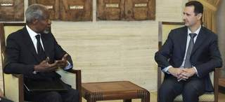
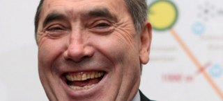
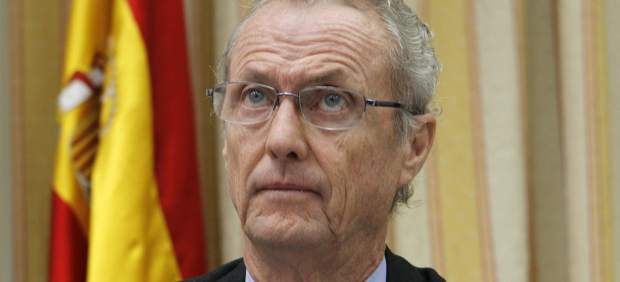
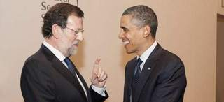
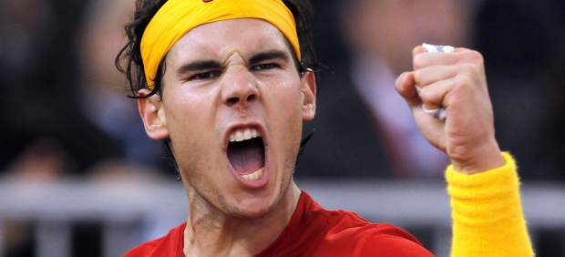
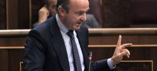
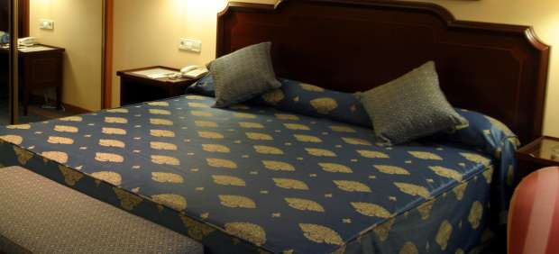
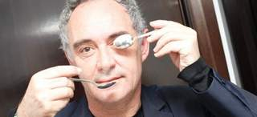

2012-03-27T10:53:34Z
Damasco acepta el plan de paz propuesto por Kofi Annan para Siria
Damasco acepta el plan de paz propuesto por Kofi Annan para Siria
AGENCIAS
Dicha hoja de ruta estaba compuesta por 6 puntos.
Cuenta con la aprobación de la ONU y la Liga Árabe.
El Gobierno sirio ha aceptado el plan de paz de seis puntos propuesto por el enviado especial de la ONU y la Liga Árabe, Kofi Annan, y que ha sido apoyado por el Consejo de Seguridad de Naciones Unidas, según informó el portavoz de Annan.Más información en breve.
AGENCIAS
- Dicha hoja de ruta estaba compuesta por 6 puntos.
- Cuenta con la aprobación de la ONU y la Liga Árabe.
-

El Gobierno sirio ha aceptado el plan de paz de seis puntos propuesto por el enviado especial de la ONU y la Liga Árabe, Kofi Annan, y que ha sido apoyado por el Consejo de Seguridad de Naciones Unidas, según informó el portavoz de Annan.
Más información en breve.

2012-03-27T10:19:32Z
Una muestra de 50 rostros, esencia de la fotografía de prensa
Una muestra de 50 rostros, esencia de la fotografía de prensa
P. CARO
Pedro Madueño expone retratos de personalidades culturales y políticas.
El CaixaForum de Barcelona acoge la muestra del fotógrafo.
Pedro Madueño condensa los retratos periodísticos que ha realizado cámara en mano de 1977 a 2012 en una exposición que este lunes presentó CaixaForum de Barcelona.35 años como retratista para la prensa se reúnen en una cincuentena de imágenes de personalidades de la cultura y la literatura: Quim Monzó,Terenci Moix, Baltasar Porcel, Joan Marsé, John Irving, Salman Rushdie, Miquel Martí y Polo, Joan de Sagarra..., y de la política: el rey Juan Carlos, el juez Baltasar Garzón, Felipe González o el presidente de la Generalitat, Artur Mas.Pedro Madueño (Córdoba, 1961) es "uno de los fotoperiodistas catalanes en activo más destacados de su generación", según resalta CaixaForum Barcelona sobre su trabajo en el diario La Vanguardia.*www.lacaixa.se/obrasocial
P. CARO
- Pedro Madueño expone retratos de personalidades culturales y políticas.
- El CaixaForum de Barcelona acoge la muestra del fotógrafo.
Pedro Madueño condensa los retratos periodísticos que ha realizado cámara en mano de 1977 a 2012 en una exposición que este lunes presentó CaixaForum de Barcelona.
35 años como retratista para la prensa se reúnen en una cincuentena de imágenes de personalidades de la cultura y la literatura: Quim Monzó,Terenci Moix, Baltasar Porcel, Joan Marsé, John Irving, Salman Rushdie, Miquel Martí y Polo, Joan de Sagarra..., y de la política: el rey Juan Carlos, el juez Baltasar Garzón, Felipe González o el presidente de la Generalitat, Artur Mas.
Pedro Madueño (Córdoba, 1961) es "uno de los fotoperiodistas catalanes en activo más destacados de su generación", según resalta CaixaForum Barcelona sobre su trabajo en el diario La Vanguardia.
*www.lacaixa.se/obrasocial
2012-03-27T10:14:22Z
Estados Unidos amenaza con retirar la licencia concesión de dominios al organismo ICANN
Estados Unidos amenaza con retirar la licencia concesión de dominios al organismo ICANN
EP
El Gobierno estadounidense advirtió de que las normas del organismo sin ánimo de lucro respecto a los conflictos de intereses no eran lo suficientemente duras.
La intención de la ICANN de que cualquier palabra puede ser usada como dominio ha generado suspicacias en el Gobierno de Estados Unidos.
Solo ha ampliado el contrato con la ICANN hasta septiembre.
Un controvertido intento de expandir los dominios de Internet más allá de .com, .org o .net ha provocado la insólita amenaza por parte del Gobierno de Estados Unidos a la ICANN. Las autoridades amenanzan con retirarle la licencia fundamental para otorgar dominios ya que consideran que se ha beneficiado financieramente de la liberación de direcciones web.La Corporación de Internet para la Asignación de Nombres y Números (ICANN, por sus siglas en inglés) depende de su contrato con el Gobierno de Estados Unidos para coordinar las direcciones únicas que les dicen a los ordenadores dónde encontrarse unos a otros, y sin las cuales Internet no funcionaría a nivel global.Pero este mes, el Gobierno estadounidense advirtió de que las normas del organismo sin ánimo de lucro respecto a los conflictos de intereses no eran lo suficientemente duras, y solo amplió temporalmente el contrato de ICANN, que mantiene desde 1998, en lugar de renovarlo, como gran parte del sector esperaba. Si no asegura el contrato sobre la Autoridad de Asignación de Números de Internet (IANA, por sus siglas en inglés), la capacidad de la ICANN para aplicar su programa de expansión de direcciones podría verse gravemente dañada, lo que supondría el movimiento más radical en la historia de la organización.Las preocupaciones por los conflictos de intereses han surgido porque algunos miembros pasados y presentes del organismo podrían beneficiarse financieramente de la liberación de direcciones web, gracias a sus lazos con organizaciones que obtienen dinero con el registro de nuevos nombres de dominio o con consejos sobre la expansión.Actualmente, esas organizaciones están restringidas a las dos docenas de los denominados dominios de alto nivel, como .com, .org o .net, o a dominios de códigos nacionales como .co.uk. La ICANN quiere hacer posible que las marcas, firmas o ciudades que busquen asentarse en Internet consigan y exploten sus propios dominios, como por ejemplo .apple, .nyc o .madrid, lo que les proporciona más control sobre su presencia en la red y una mayor elección para sus nombres. Sin embargo, parece que las autoridades estadounidenses sospechas que miembros de la corporación podrían esta aprovechando estos dominios para lucrarse.La postura estadounidense ha provocado una gran preocupación en la ICANN. "No otorgarle a la ICANN el contrato IANA supondría un mazazo a sus cimientos", afirmó Philip Corwin, consejero legal de la Asociación de Comercio por Internet. "La ICANN necesita el contrato para conseguir la autoridad que necesita para hacer que el programa realmente funcione".El contrato se ha renovado hasta septiembre de este año, así que habrá que esperar hasta entonces para ver qué ocurre finalmente.
EP
- El Gobierno estadounidense advirtió de que las normas del organismo sin ánimo de lucro respecto a los conflictos de intereses no eran lo suficientemente duras.
- La intención de la ICANN de que cualquier palabra puede ser usada como dominio ha generado suspicacias en el Gobierno de Estados Unidos.
- Solo ha ampliado el contrato con la ICANN hasta septiembre.
Un controvertido intento de expandir los dominios de Internet más allá de .com, .org o .net ha provocado la insólita amenaza por parte del Gobierno de Estados Unidos a la ICANN. Las autoridades amenanzan con retirarle la licencia fundamental para otorgar dominios ya que consideran que se ha beneficiado financieramente de la liberación de direcciones web.
La Corporación de Internet para la Asignación de Nombres y Números (ICANN, por sus siglas en inglés) depende de su contrato con el Gobierno de Estados Unidos para coordinar las direcciones únicas que les dicen a los ordenadores dónde encontrarse unos a otros, y sin las cuales Internet no funcionaría a nivel global.
Pero este mes, el Gobierno estadounidense advirtió de que las normas del organismo sin ánimo de lucro respecto a los conflictos de intereses no eran lo suficientemente duras, y solo amplió temporalmente el contrato de ICANN, que mantiene desde 1998, en lugar de renovarlo, como gran parte del sector esperaba. Si no asegura el contrato sobre la Autoridad de Asignación de Números de Internet (IANA, por sus siglas en inglés), la capacidad de la ICANN para aplicar su programa de expansión de direcciones podría verse gravemente dañada, lo que supondría el movimiento más radical en la historia de la organización.
Las preocupaciones por los conflictos de intereses han surgido porque algunos miembros pasados y presentes del organismo podrían beneficiarse financieramente de la liberación de direcciones web, gracias a sus lazos con organizaciones que obtienen dinero con el registro de nuevos nombres de dominio o con consejos sobre la expansión.
Actualmente, esas organizaciones están restringidas a las dos docenas de los denominados dominios de alto nivel, como .com, .org o .net, o a dominios de códigos nacionales como .co.uk. La ICANN quiere hacer posible que las marcas, firmas o ciudades que busquen asentarse en Internet consigan y exploten sus propios dominios, como por ejemplo .apple, .nyc o .madrid, lo que les proporciona más control sobre su presencia en la red y una mayor elección para sus nombres. Sin embargo, parece que las autoridades estadounidenses sospechas que miembros de la corporación podrían esta aprovechando estos dominios para lucrarse.
La postura estadounidense ha provocado una gran preocupación en la ICANN. "No otorgarle a la ICANN el contrato IANA supondría un mazazo a sus cimientos", afirmó Philip Corwin, consejero legal de la Asociación de Comercio por Internet. "La ICANN necesita el contrato para conseguir la autoridad que necesita para hacer que el programa realmente funcione".
El contrato se ha renovado hasta septiembre de este año, así que habrá que esperar hasta entonces para ver qué ocurre finalmente.
2012-03-27T10:13:22Z
Rajoy anuncia que el presupuesto de los ministerios caerá entre el 14% y el 15%
Rajoy anuncia que el presupuesto de los ministerios caerá entre el 14% y el 15%
20MINUTOS.ES
El presidente ha asistido a la Cumbre de Seguridad Nuclear de Seúl.
Ha avanzado que las cuentas para 2012 "no irán por la vía de subir los impuestos".
Sobre la huelga general del 29-M: "El Gobierno está convencido de lo que ha hecho".
El presidente del Gobierno, Mariano Rajoy, ha expresado su "respeto" al derecho de huelga de los trabajadores el próximo 29-M, pero asegura que el paro general "no va a servir para solucionar los problemas de España" y que el Gobierno "está convencido de lo que ha hecho" con la aprobación de la reforma laboral.Sobre sus primeros cien días de Gobierno, ha explicado que no recuerda un Ejecutivo "que hubiera hecho tantas reformas" en tan poco tiempo, por eso, "probablemente", se haya producido una convocatoria de huelga general, ha añadido durante su comparecencia tras la Cumbre de Seguridad Nuclear de Seúl en la que ha participado junto a medio centenar de líderes. "Hemos fijado el objetivo, hemos marcado un rumbo y hemos tomado decisiones", afirmó.También ha hablado Rajoy de los PGE que el Consejo de Ministros aprobará finalmente el viernes. Ha reiterado que serán "austeros" y que, aunque aún "no está cerrados", no irán "por la vía de subir los impuestos al consumo". Mariano Rajoy ha asegurado que el Gobierno va a intentar "no hacer más daño al consumo" y ha avanzado que la media del recorte por ministerio será entre el 14% y el 15%, frente al 12,5% anunciado inicialmente.Tras la presentación de las cuentas para 2012, ha explicado, habrá "un nuevo capítulo de reformas" que afectarán a los servicios públicos, a la Administración y al sector energético; el Gobierno, ha dicho, "tomará decisiones e intentará ser justo y equitativo". "Les dije a los españoles en campaña y después que vivíamos una situación difícil y que habría que tomar decisiones, que no iban a producir efecto en el corto plazo, pero que había que hacerlo".
20MINUTOS.ES
- El presidente ha asistido a la Cumbre de Seguridad Nuclear de Seúl.
- Ha avanzado que las cuentas para 2012 "no irán por la vía de subir los impuestos".
- Sobre la huelga general del 29-M: "El Gobierno está convencido de lo que ha hecho".
El presidente del Gobierno, Mariano Rajoy, ha expresado su "respeto" al derecho de huelga de los trabajadores el próximo 29-M, pero asegura que el paro general "no va a servir para solucionar los problemas de España" y que el Gobierno "está convencido de lo que ha hecho" con la aprobación de la reforma laboral.
Sobre sus primeros cien días de Gobierno, ha explicado que no recuerda un Ejecutivo "que hubiera hecho tantas reformas" en tan poco tiempo, por eso, "probablemente", se haya producido una convocatoria de huelga general, ha añadido durante su comparecencia tras la Cumbre de Seguridad Nuclear de Seúl en la que ha participado junto a medio centenar de líderes. "Hemos fijado el objetivo, hemos marcado un rumbo y hemos tomado decisiones", afirmó.
También ha hablado Rajoy de los PGE que el Consejo de Ministros aprobará finalmente el viernes. Ha reiterado que serán "austeros" y que, aunque aún "no está cerrados", no irán "por la vía de subir los impuestos al consumo". Mariano Rajoy ha asegurado que el Gobierno va a intentar "no hacer más daño al consumo" y ha avanzado que la media del recorte por ministerio será entre el 14% y el 15%, frente al 12,5% anunciado inicialmente.
Tras la presentación de las cuentas para 2012, ha explicado, habrá "un nuevo capítulo de reformas" que afectarán a los servicios públicos, a la Administración y al sector energético; el Gobierno, ha dicho, "tomará decisiones e intentará ser justo y equitativo". "Les dije a los españoles en campaña y después que vivíamos una situación difícil y que habría que tomar decisiones, que no iban a producir efecto en el corto plazo, pero que había que hacerlo".
2012-03-27T09:43:15Z
Descubren que las palomitas de maíz son una importante fuente de antioxidantes
Descubren que las palomitas de maíz son una importante fuente de antioxidantes
20MINUTOS.ES/EP
Contienen más polifenoles que la fruta y la verdura: 300 miligramos por porción por los 160 miligramos de una porción de fruta.
La cáscara es la que contiene más cantidad de fibra y de este tipo de antioxidantes.
No deben sustituir a fruta y verdura, que contienen también vitaminas.
Si pensamos en alimentación sana seguro que nadie apostaría por las palomitas de maíz. Y sin embargo parecen tener algunas propiedades, por ejemplo su contenido en polifenoles. Los polifenoles (que fueron conocidos durante un tiempo como vitamina P) son un tipo de antioxidantes presente en algunos alimentos. El organismo los sintetiza y pasan a formar parte de la sangre aumentando la capacidad antioxidante. Como antioxidantes que son absorben el impacto de los radicales libres (los que provocan el envejecimiento). Las principales fuentes de polifenoles son bayas, té, cerveza, uvas/vino, aceite de oliva, chocolate/cacao, nueces, cacahuetes, granadas y otras frutas y vegetales. Desde ahora, habrá que unir a esta lista a las humildes palomitas de maíz. Investigadores de la Universidad de Scranton (EE UU) han descubierto que las palomitas de maíz contienen polifenoles en cantidades superiores a las que presentan muchas frutas y verduras.En concreto, el científico Joe Vinson ha descubierto que estos antioxidantes están en concentraciones más elevadas en las palomitas, que sólo tiene un 4% de agua, en comparación con los de las frutas y las verduras, que se diluyen en el 90% de agua que compone estos alimentos.Esto hace que la cantidad de polifenoles que se encuentra en las palomitas de maíz sea de hasta 300 miligramos por porción, en comparación con los 114 miligramos que tiene una porción de maíz dulce, y los 160 miligramos que tiene una porción de fruta.Lo mejor está en la cáscaraLos investigadores han observado que la cáscara de las palomitas, que todo el mundo odia porque suele quedarse entre los dientes, es en realidad la que tiene la mayor concentración de polifenoles y fibra. Vinson, que ya fue pionero en analizar los componentes saludables del chocolate o las nueces, cataloga a las palomitas de maíz como verdaderas "pepitas de oro nutricionales" y "el aperitivo perfecto".La clave, según ha explicado este experto, es que se come todo el grano sin procesar, evitando así mezclarlo con otros ingredientes como pasa con otros cereales. De hecho, esto hace que una porción de palomitas de maíz ofrezca más del 70% de la ingesta diaria de un grano entero.Se trata de las palomitas no del maíz, ya que el maíz con aceite o mantequilla es una "pesadilla nutricional cargada de grasa y calorías". Claro que las palomitas tienen su lado oscuro: hechas en el microondas tienen el doble de calorías, ya que alrededor del 43% es grasa.Pese a estos resultados, Vinson ha reconocido que las palomitas de maíz no puede sustituir a las frutas y verduras frescas en una dieta saludable, ya que éstas contienen también vitaminas y otros nutrientes que son "esenciales para una buena salud y no están en las palomitas".
20MINUTOS.ES/EP
- Contienen más polifenoles que la fruta y la verdura: 300 miligramos por porción por los 160 miligramos de una porción de fruta.
- La cáscara es la que contiene más cantidad de fibra y de este tipo de antioxidantes.
- No deben sustituir a fruta y verdura, que contienen también vitaminas.
Si pensamos en alimentación sana seguro que nadie apostaría por las palomitas de maíz. Y sin embargo parecen tener algunas propiedades, por ejemplo su contenido en polifenoles.
Los polifenoles (que fueron conocidos durante un tiempo como vitamina P) son un tipo de antioxidantes presente en algunos alimentos. El organismo los sintetiza y pasan a formar parte de la sangre aumentando la capacidad antioxidante. Como antioxidantes que son absorben el impacto de los radicales libres (los que provocan el envejecimiento).
Las principales fuentes de polifenoles son bayas, té, cerveza, uvas/vino, aceite de oliva, chocolate/cacao, nueces, cacahuetes, granadas y otras frutas y vegetales. Desde ahora, habrá que unir a esta lista a las humildes palomitas de maíz.
Investigadores de la Universidad de Scranton (EE UU) han descubierto que las palomitas de maíz contienen polifenoles en cantidades superiores a las que presentan muchas frutas y verduras.
En concreto, el científico Joe Vinson ha descubierto que estos antioxidantes están en concentraciones más elevadas en las palomitas, que sólo tiene un 4% de agua, en comparación con los de las frutas y las verduras, que se diluyen en el 90% de agua que compone estos alimentos.
Esto hace que la cantidad de polifenoles que se encuentra en las palomitas de maíz sea de hasta 300 miligramos por porción, en comparación con los 114 miligramos que tiene una porción de maíz dulce, y los 160 miligramos que tiene una porción de fruta.
Lo mejor está en la cáscara
Los investigadores han observado que la cáscara de las palomitas, que todo el mundo odia porque suele quedarse entre los dientes, es en realidad la que tiene la mayor concentración de polifenoles y fibra.
Vinson, que ya fue pionero en analizar los componentes saludables del chocolate o las nueces, cataloga a las palomitas de maíz como verdaderas "pepitas de oro nutricionales" y "el aperitivo perfecto".
La clave, según ha explicado este experto, es que se come todo el grano sin procesar, evitando así mezclarlo con otros ingredientes como pasa con otros cereales. De hecho, esto hace que una porción de palomitas de maíz ofrezca más del 70% de la ingesta diaria de un grano entero.
Se trata de las palomitas no del maíz, ya que el maíz con aceite o mantequilla es una "pesadilla nutricional cargada de grasa y calorías". Claro que las palomitas tienen su lado oscuro: hechas en el microondas tienen el doble de calorías, ya que alrededor del 43% es grasa.
Pese a estos resultados, Vinson ha reconocido que las palomitas de maíz no puede sustituir a las frutas y verduras frescas en una dieta saludable, ya que éstas contienen también vitaminas y otros nutrientes que son "esenciales para una buena salud y no están en las palomitas".
2012-03-27T09:32:15Z
El Tesoro español coloca 2.579 millones de euros y baja el interés a muy corto plazo
El Tesoro español coloca 2.579 millones de euros y baja el interés a muy corto plazo
AGENCIAS
Primera emisión tras las elecciones andaluzas y asturianas.
La subasta cumple con lo previsto.
Ha subastado bonos a tres y seis meses.
El Tesoro Público ha colocado 2.578,45 millones de euros en letras a 3 y 6 meses, en la primera emisión que se celebra tras las elecciones de Andalucía y Asturias y justo tres días antes de que Gobierno apruebe el anteproyecto de ley del Presupuesto del año 2012.Con esta emisión, el Tesoro se ha quedado en la parte media del rango, ya que esperaba captar entre 2.000 y 3.000 millones. La demanda, por su parte, ha vuelto a ser alta y ha superado los 11.000 millones de euros, según la información difundida por el Banco de España.En concreto, el Tesoro ha colocado 1.499,40 millones de los 5.264,40 solicitados por los inversores en letras a tres meses. En este caso, el tipo de interés medio se ha moderado desde el 0,396% de la última ocasión al 0,381% actual. El interés marginal se ha situado en el 0,428%, frente al 0,440% anterior, el nivel más bajo desde marzo de 2010.Además, el organismo ha colocado 1.080,05 millones de euros de los 6.007,46 pedidos por el mercado en letras a 6 meses. El interés medio ha pasado del 0,764% anterior al 0,836% actual, mientras que el marginal ha pasado del 0,780% al 0,868%.El resultado de la emisión se ha conocido justo después de que el Banco de España publicara su último boletín económico, en el que vaticina que la economía española entrará en recesión en el primer trimestre del año, después de que se mantuviera la tendencia contractiva del PIB.Además, la subasta se celebra dos días antes de la huelga general y tres días antes de que el Gobierno apruebe el anteproyecto de ley del Presupuesto del año 2012, donde podría incluir la creación de una agencia vinculada al Tesoro para emitir deuda y repartirla después entre las comunidades autónomas.'Luz verde' a los hispanobonosDe esta forma, el equipo económico de Mariano Rajoy daría 'luz verde' a los conocidos como 'hispanobonos', emisiones de deuda del Estado en representación de las regiones para aliviar sus dificultades de financiación.La última vez que el Tesoro acudió a los mercados captó 5.044,06 millones en letras a 12 y 18 meses, con una alta demanda y a tipos más bajos que en la anterior ocasión.A pesar de subir el interés de las letras a 6 meses, el Tesoro ha conseguido mantener una vez más la buena racha de emisiones iniciada el pasado mes de diciembre, ya que en todas las subastas ha conseguido colocar prácticamente el máximo previsto y a tipos más bajos.De hecho, el organismo ha emitido ya más de 50.000 millones de euros en lo que va de año, lo que supone más de la mitad de los 86.000 millones de euros brutos que espera colocar en deuda a medio y largo plazo en 2012.A lo largo del mes de abril, el Tesoro acudirá a los mercados en busca de financiación en cuatro ocasiones. En concreto, celebrará una subasta de bonos el miércoles 4 de abril, una de letras el martes 17, una de obligaciones el jueves 19 y otra de letras el martes 24.
AGENCIAS
- Primera emisión tras las elecciones andaluzas y asturianas.
- La subasta cumple con lo previsto.
- Ha subastado bonos a tres y seis meses.
El Tesoro Público ha colocado 2.578,45 millones de euros en letras a 3 y 6 meses, en la primera emisión que se celebra tras las elecciones de Andalucía y Asturias y justo tres días antes de que Gobierno apruebe el anteproyecto de ley del Presupuesto del año 2012.
Con esta emisión, el Tesoro se ha quedado en la parte media del rango, ya que esperaba captar entre 2.000 y 3.000 millones. La demanda, por su parte, ha vuelto a ser alta y ha superado los 11.000 millones de euros, según la información difundida por el Banco de España.
En concreto, el Tesoro ha colocado 1.499,40 millones de los 5.264,40 solicitados por los inversores en letras a tres meses. En este caso, el tipo de interés medio se ha moderado desde el 0,396% de la última ocasión al 0,381% actual. El interés marginal se ha situado en el 0,428%, frente al 0,440% anterior, el nivel más bajo desde marzo de 2010.
Además, el organismo ha colocado 1.080,05 millones de euros de los 6.007,46 pedidos por el mercado en letras a 6 meses. El interés medio ha pasado del 0,764% anterior al 0,836% actual, mientras que el marginal ha pasado del 0,780% al 0,868%.
El resultado de la emisión se ha conocido justo después de que el Banco de España publicara su último boletín económico, en el que vaticina que la economía española entrará en recesión en el primer trimestre del año, después de que se mantuviera la tendencia contractiva del PIB.
Además, la subasta se celebra dos días antes de la huelga general y tres días antes de que el Gobierno apruebe el anteproyecto de ley del Presupuesto del año 2012, donde podría incluir la creación de una agencia vinculada al Tesoro para emitir deuda y repartirla después entre las comunidades autónomas.
'Luz verde' a los hispanobonos
De esta forma, el equipo económico de Mariano Rajoy daría 'luz verde' a los conocidos como 'hispanobonos', emisiones de deuda del Estado en representación de las regiones para aliviar sus dificultades de financiación.
La última vez que el Tesoro acudió a los mercados captó 5.044,06 millones en letras a 12 y 18 meses, con una alta demanda y a tipos más bajos que en la anterior ocasión.
A pesar de subir el interés de las letras a 6 meses, el Tesoro ha conseguido mantener una vez más la buena racha de emisiones iniciada el pasado mes de diciembre, ya que en todas las subastas ha conseguido colocar prácticamente el máximo previsto y a tipos más bajos.
De hecho, el organismo ha emitido ya más de 50.000 millones de euros en lo que va de año, lo que supone más de la mitad de los 86.000 millones de euros brutos que espera colocar en deuda a medio y largo plazo en 2012.
A lo largo del mes de abril, el Tesoro acudirá a los mercados en busca de financiación en cuatro ocasiones. En concreto, celebrará una subasta de bonos el miércoles 4 de abril, una de letras el martes 17, una de obligaciones el jueves 19 y otra de letras el martes 24.
2012-03-27T09:20:17Z
Acusan a Eddy Merckx en un caso de corrupción relacionado con la policía belga
Acusan a Eddy Merckx en un caso de corrupción relacionado con la policía belga
EFE
En el caso también está inculpado Philippe Boucar, comisario de Policía del distrito de Anderlecht (sur de Bruselas).
Éste habría favorecido a Merckx en la compra de la policía local de un pedido de 48 de bicicletas en el marco de una contratación pública.
El exciclista belga Eddy Merckx ha sido inculpado en un caso de corrupción relacionado con la policía local de Bruselas, que habría favorecido al quíntuple campeón del Tour en una subasta pública para la compra de un lote de bicicletas, según publica hoy la prensa belga. En el caso también está inculpado Philippe Boucar, comisario de Policía del distrito de Anderlecht (sur de Bruselas), quien habría favorecido a Merckx en la compra de la policía local de un pedido de 48 de bicicletas en el marco de una contratación pública, según el diario belga La Dernière Heure.Merckx, que desde su retirada del ciclismo profesional comercializa una marca de bicicletas con su propio nombre, se habría beneficiado presuntamente de esta licitación a cambio de dejar uno de estos vehículos a precio especial al comisario. Entre 2006 y 2007, Boucar informó a Merckx de la apertura de una subasta pública antes de que esta se anunciara oficialmente y posteriormente le comunicó los precios ofertados por otras compañías, según el citado medio. Las bicicletas estaban destinadas a equipar la brigada ciclista de la policía de Anderlecht y fueron pagadas con fondos provenientes de las recaudaciones por multas de tráfico. La Dernière Heure afirma que el Tribunal de Bruselas decidió retrasar la inculpación de Merckx, prevista inicialmente para el pasado 11 de diciembre, para permitirle acudir el pasado 15 de diciembre a París a la entrega de la condecoración de la Legión de Honor por parte del presidente francés, Nicolas Sarkozy. El Tribunal de Bruselas no ha confirmado esta circunstancia y por el momento ha rechazado hacer otros comentarios sobre el caso.
EFE
- En el caso también está inculpado Philippe Boucar, comisario de Policía del distrito de Anderlecht (sur de Bruselas).
- Éste habría favorecido a Merckx en la compra de la policía local de un pedido de 48 de bicicletas en el marco de una contratación pública.

El exciclista belga Eddy Merckx ha sido inculpado en un caso de corrupción relacionado con la policía local de Bruselas, que habría favorecido al quíntuple campeón del Tour en una subasta pública para la compra de un lote de bicicletas, según publica hoy la prensa belga.
En el caso también está inculpado Philippe Boucar, comisario de Policía del distrito de Anderlecht (sur de Bruselas), quien habría favorecido a Merckx en la compra de la policía local de un pedido de 48 de bicicletas en el marco de una contratación pública, según el diario belga La Dernière Heure.
Merckx, que desde su retirada del ciclismo profesional comercializa una marca de bicicletas con su propio nombre, se habría beneficiado presuntamente de esta licitación a cambio de dejar uno de estos vehículos a precio especial al comisario.
Entre 2006 y 2007, Boucar informó a Merckx de la apertura de una subasta pública antes de que esta se anunciara oficialmente y posteriormente le comunicó los precios ofertados por otras compañías, según el citado medio.
Las bicicletas estaban destinadas a equipar la brigada ciclista de la policía de Anderlecht y fueron pagadas con fondos provenientes de las recaudaciones por multas de tráfico.
La Dernière Heure afirma que el Tribunal de Bruselas decidió retrasar la inculpación de Merckx, prevista inicialmente para el pasado 11 de diciembre, para permitirle acudir el pasado 15 de diciembre a París a la entrega de la condecoración de la Legión de Honor por parte del presidente francés, Nicolas Sarkozy.
El Tribunal de Bruselas no ha confirmado esta circunstancia y por el momento ha rechazado hacer otros comentarios sobre el caso.
2012-03-27T09:07:50Z
Pedro Morenés avanza que el presupuesto de Defensa se reducirá entre un 12% y un 14%
Pedro Morenés avanza que el presupuesto de Defensa se reducirá entre un 12% y un 14%
EFE
Las deudas que acumula el Ministerio ascienden a unos 30.000 millones de euros.
El ministro asegura que su departamento sufrirá los mismos recortes que otros.
La "prioridad absoluta" del Gobierno son las misiones internacionales, ha dicho.
El presupuesto del Ministerio de Defensa para 2012 se reducirá entre un 12% y un 14%. El ministro Pedro Morenés ha avanzado este dato asegurando que su departamento va a sufrir los mismos recortes, "conceptualmente", que otros departamentos y ha recalcado que la "prioridad absoluta" del Gobierno son las misiones internacionales en las que participa España. Las deudas que acumula el Ministerio ascienden a unos 30.000 millones de euros, ha dicho en una entrevista a RNE, confirmando que se renegociará con la industria del sector para revisar los programas y "su alcance cuantitativo". Morenés ha recordado que en los últimos cuatro años se han reducido considerablemente algunas partidas, como la de inversión, cuyo descenso ha cifrado en un 65% al haber pasado de 2.200 millones de euros a 750.Preguntado por si la necesidad de hacer frente a la crisis afectará a las misiones en las que participa España, el ministro ha respondido que el Gobierno atiende "con gran seriedad" a sus compromisos internacionales y la responsabilidad contraída y, como una "tercera derivada", al coste de las operaciones. "El Gobierno tiene muy claro dónde estamos y lo que estamos haciendo es una prioridad absoluta, pasaría por delante de otras restricciones que tenemos que hacer, presupuestarias, en otros ámbitos, incluso dentro del propio ministerio", ha dicho.Morenés ha añadido que la crisis ha puesto a España en una situación difícil desde el punto de vista de la credibilidad de los mercados y que, precisamente, la presencia de las tropas en el exterior "hace que esa falta de credibilidad sea compensada". Respecto a una posible reducción en el número de efectivos de tropa y marinería, ha asegurado que los recursos humanos son "esenciales" para la defensa y ha añadido que su reducción "tiene que ir siempre en la línea de aquello que no es operativo".
EFE
- Las deudas que acumula el Ministerio ascienden a unos 30.000 millones de euros.
- El ministro asegura que su departamento sufrirá los mismos recortes que otros.
- La "prioridad absoluta" del Gobierno son las misiones internacionales, ha dicho.

El presupuesto del Ministerio de Defensa para 2012 se reducirá entre un 12% y un 14%. El ministro Pedro Morenés ha avanzado este dato asegurando que su departamento va a sufrir los mismos recortes, "conceptualmente", que otros departamentos y ha recalcado que la "prioridad absoluta" del Gobierno son las misiones internacionales en las que participa España.
Las deudas que acumula el Ministerio ascienden a unos 30.000 millones de euros, ha dicho en una entrevista a RNE, confirmando que se renegociará con la industria del sector para revisar los programas y "su alcance cuantitativo". Morenés ha recordado que en los últimos cuatro años se han reducido considerablemente algunas partidas, como la de inversión, cuyo descenso ha cifrado en un 65% al haber pasado de 2.200 millones de euros a 750.
Preguntado por si la necesidad de hacer frente a la crisis afectará a las misiones en las que participa España, el ministro ha respondido que el Gobierno atiende "con gran seriedad" a sus compromisos internacionales y la responsabilidad contraída y, como una "tercera derivada", al coste de las operaciones.
"El Gobierno tiene muy claro dónde estamos y lo que estamos haciendo es una prioridad absoluta, pasaría por delante de otras restricciones que tenemos que hacer, presupuestarias, en otros ámbitos, incluso dentro del propio ministerio", ha dicho.
Morenés ha añadido que la crisis ha puesto a España en una situación difícil desde el punto de vista de la credibilidad de los mercados y que, precisamente, la presencia de las tropas en el exterior "hace que esa falta de credibilidad sea compensada".
Respecto a una posible reducción en el número de efectivos de tropa y marinería, ha asegurado que los recursos humanos son "esenciales" para la defensa y ha añadido que su reducción "tiene que ir siempre en la línea de aquello que no es operativo".
2012-03-27T09:01:44Z
El Clínic de Barcelona, el hospital mejor valorado por los médicos
El Clínic de Barcelona, el hospital mejor valorado por los médicos
EFE
Según una encuesta realizada por la OCU a más de 280 médicos especialistas.
El segundo es el hospital Vall d'Hebrón y el tercero, La Paz, de Madrid.
La capital española y Barcelona tienen los hospitales con mayor reputación.
El Hospital Clínic de Barcelona es el centro hospitalario mejor valorado por los médicos especialistas, seguido del Vall d'Hebrón, también de la Ciudad Condal, y de La Paz, de Madrid. Estos son algunos de los resultados de una encuesta realizada por la OCU a más de 280 médicos especialistas de toda España para saber cuáles son, en su opinión, los hospitales que ofrecen los mejores cuidados sanitarios a un paciente con un problema de salud grave, ha informado la organización en un comunicado. Según el estudio, el hospital Clínic fue valorado como el mejor hospital en 6 de las 13 especialidades (Neurología, Aparato digestivo, Nefrología, Urología, Oncología, Endocrinología, Cardiología, Pediatría, Ginecología -sin tener en cuenta embarazos ni partos-, Oftalmología, Cirugía ortopédica-Traumatología, Otorrinolaringología y Neumología). El Hospital Universitari Vall d'Hebron (Barcelona) y el Hospital Universitario de La Paz (Madrid) aparecen entre los 10 mejores de España en todas las especialidades. Así, Madrid y Barcelona tienen los hospitales con mayor reputación entre los especialistas, a mucha distancia del resto de localidades españolas. De los 784 hospitales que había en España a la fecha de la encuesta, sólo un 19% fue citado por alguno de los médicos especialistas encuestados. A raíz de estos resultados, la OCU considera que es necesaria una mayor transparencia respecto de los niveles de calidad de la asistencia sanitaria recibida en los hospitales. La organización espera que este estudio anime a las administraciones sanitarias a hacerlos públicos y a seguir apostando por una atención de calidad tanto en la sanidad pública como en la privada.
EFE
- Según una encuesta realizada por la OCU a más de 280 médicos especialistas.
- El segundo es el hospital Vall d'Hebrón y el tercero, La Paz, de Madrid.
- La capital española y Barcelona tienen los hospitales con mayor reputación.
El Hospital Clínic de Barcelona es el centro hospitalario mejor valorado por los médicos especialistas, seguido del Vall d'Hebrón, también de la Ciudad Condal, y de La Paz, de Madrid.
Estos son algunos de los resultados de una encuesta realizada por la OCU a más de 280 médicos especialistas de toda España para saber cuáles son, en su opinión, los hospitales que ofrecen los mejores cuidados sanitarios a un paciente con un problema de salud grave, ha informado la organización en un comunicado.
Según el estudio, el hospital Clínic fue valorado como el mejor hospital en 6 de las 13 especialidades (Neurología, Aparato digestivo, Nefrología, Urología, Oncología, Endocrinología, Cardiología, Pediatría, Ginecología -sin tener en cuenta embarazos ni partos-, Oftalmología, Cirugía ortopédica-Traumatología, Otorrinolaringología y Neumología).
El Hospital Universitari Vall d'Hebron (Barcelona) y el Hospital Universitario de La Paz (Madrid) aparecen entre los 10 mejores de España en todas las especialidades. Así, Madrid y Barcelona tienen los hospitales con mayor reputación entre los especialistas, a mucha distancia del resto de localidades españolas.
De los 784 hospitales que había en España a la fecha de la encuesta, sólo un 19% fue citado por alguno de los médicos especialistas encuestados. A raíz de estos resultados, la OCU considera que es necesaria una mayor transparencia respecto de los niveles de calidad de la asistencia sanitaria recibida en los hospitales.
La organización espera que este estudio anime a las administraciones sanitarias a hacerlos públicos y a seguir apostando por una atención de calidad tanto en la sanidad pública como en la privada.
2012-03-27T08:35:01Z
La Cumbre de Seúl insta a minimizar el uso de uranio enriquecido para 2013
La Cumbre de Seúl insta a minimizar el uso de uranio enriquecido para 2013
EFE
Una declaración de 13 puntos, firmada por 53 países, insta a potenciar la seguridad a la hora de manejar y transportar los materiales nucleares.
Se insta a prevenir que la tecnología nuclear caiga en manos de grupos hostiles.
Obama invita a Rajoy a la Casa Blanca tras su primer encuentro en Seúl.
Rajoy asegura a la ONU que España sigue comprometida con la Alianza de Civilizaciones.
Los líderes de 53 países reunidos en la Cumbre de Seguridad Nuclear de Seúl han llamado a minimizar el uso del uranio altamente enriquecido para finales de 2013, y a tomar medidas para que su manejo sea seguro.En un comunicado emitido al término del encuentro, los dirigentes instaron además a la adhesión a los instrumentos multilaterales relacionados con seguridad nuclear y subrayaron el "papel central" del Organismo Internacional de la Energía Atómica (OIEA) en este terreno.La declaración, de trece puntos, destaca además la relación entre la seguridad en las plantas atómicas y la prevención de delitos nucleares y plasma el compromiso de los 53 países de potenciar la seguridad a la hora de transportar materiales nucleares y radiactivos y combatir su tráfico ilegal.En línea con la primera Cumbre de Seguridad Nuclear, celebrada en Washington en 2010, los líderes señalaron que el terrorismo nuclear sigue siendo una de las amenazas que plantean un mayor desafío para la seguridad internacional.Subrayaron que es una "responsabilidad fundamental de los Estados" mantener la seguridad efectiva de todo su material nuclear, así como de las instalaciones atómicas bajo su control, y prevenir que los materiales, la información o la tecnología nuclear caiga en manos de grupos hostiles.Con este objetivo, instaron a crear una "arquitectura de seguridad nuclear global" con la adhesión del mayor número posible de países a los acuerdos y convenciones internacionales vinculados a la protección del material atómico.Precauciones especialesTambién destacaron que el uranio altamente enriquecido y el plutonio, materiales que permiten fabricar armas atómicas, requieren "precauciones especiales", por lo que instaron a los Estados a retirarlos de forma "segura" de las instalaciones que ya no los utilicen.En este sentido, llamaron a promover el uso de uranio de bajo enriquecimiento en lugar del isótopo de mayor grado, lo que conllevaría reconvertir "en los casos que sea técnica y económicamente viable" los reactores que utilizan el tipo más peligroso de uranio.Por otra parte, los líderes recalcaron la importancia de garantizar la protección de los materiales vulnerables durante su transporte y de combatir su tráfico ilegal.El Comunicado de Seúl, que este martes cerró la II Cumbre de Seguridad Nuclear celebrada en la capital surcoreana, también puso fecha y lugar a la próxima edición del evento, que tendrá lugar en 2014 en Holanda.
EFE
- Una declaración de 13 puntos, firmada por 53 países, insta a potenciar la seguridad a la hora de manejar y transportar los materiales nucleares.
- Se insta a prevenir que la tecnología nuclear caiga en manos de grupos hostiles.
- Obama invita a Rajoy a la Casa Blanca tras su primer encuentro en Seúl.
- Rajoy asegura a la ONU que España sigue comprometida con la Alianza de Civilizaciones.
Los líderes de 53 países reunidos en la Cumbre de Seguridad Nuclear de Seúl han llamado a minimizar el uso del uranio altamente enriquecido para finales de 2013, y a tomar medidas para que su manejo sea seguro.
En un comunicado emitido al término del encuentro, los dirigentes instaron además a la adhesión a los instrumentos multilaterales relacionados con seguridad nuclear y subrayaron el "papel central" del Organismo Internacional de la Energía Atómica (OIEA) en este terreno.
La declaración, de trece puntos, destaca además la relación entre la seguridad en las plantas atómicas y la prevención de delitos nucleares y plasma el compromiso de los 53 países de potenciar la seguridad a la hora de transportar materiales nucleares y radiactivos y combatir su tráfico ilegal.
En línea con la primera Cumbre de Seguridad Nuclear, celebrada en Washington en 2010, los líderes señalaron que el terrorismo nuclear sigue siendo una de las amenazas que plantean un mayor desafío para la seguridad internacional.
Subrayaron que es una "responsabilidad fundamental de los Estados" mantener la seguridad efectiva de todo su material nuclear, así como de las instalaciones atómicas bajo su control, y prevenir que los materiales, la información o la tecnología nuclear caiga en manos de grupos hostiles.
Con este objetivo, instaron a crear una "arquitectura de seguridad nuclear global" con la adhesión del mayor número posible de países a los acuerdos y convenciones internacionales vinculados a la protección del material atómico.
Precauciones especiales
También destacaron que el uranio altamente enriquecido y el plutonio, materiales que permiten fabricar armas atómicas, requieren "precauciones especiales", por lo que instaron a los Estados a retirarlos de forma "segura" de las instalaciones que ya no los utilicen.
En este sentido, llamaron a promover el uso de uranio de bajo enriquecimiento en lugar del isótopo de mayor grado, lo que conllevaría reconvertir "en los casos que sea técnica y económicamente viable" los reactores que utilizan el tipo más peligroso de uranio.
Por otra parte, los líderes recalcaron la importancia de garantizar la protección de los materiales vulnerables durante su transporte y de combatir su tráfico ilegal.
El Comunicado de Seúl, que este martes cerró la II Cumbre de Seguridad Nuclear celebrada en la capital surcoreana, también puso fecha y lugar a la próxima edición del evento, que tendrá lugar en 2014 en Holanda.
2012-03-27T07:36:59Z
La Guardia Civil detiene en Valencia a un yihadista que hacía de "bibliotecario" de Al Qaeda
La Guardia Civil detiene en Valencia a un yihadista que hacía de "bibliotecario" de Al Qaeda
AGENCIAS
Por difundir vídeos y alentar la realización de atentados.
La investigación comenzó en febrero de 2011.
Nacionalizado en Arabia Saudí, tiene su residencia en Valencia.
Han constatado, a través de Internet, su pertenencia a Al Qaeda.
La doctrina yihadista se asienta en Cataluña y en Ávila.
Agentes de la Guardia Civil han detenido este martes en Valencia a M.H.A., perteneciente a Al Qaeda, por difundir productos audiovisuales y alentar la realización de actos terroristas.El yihadista era conocido en el seno de Al Qaeda como el "bibliotecario" de la organización y era pieza clave de la campaña de propaganda y de captación de terroristas en Internet, según ha adelantado el ministro del Interior, Jorge Fernández Díaz. Fernández Díaz ha explicado que el detenido, un ciudadano saudí nacido en Jordania, trabajaba para Al Qaeda y para dos de sus filiales, Al Qaeda en la Península Arábiga y Al Qaeda en el Magreb Islámico (AQMI).El arrestado estaba dedicado a tiempo completo a difundir la yihad en Internet, trabajaba en su casa entre 8 y 16 horas diarias en la captación y adoctrinamiento de islamistas radicales e incluso para facilitar el transporte de terroristas a Afganistán y otras zonas en las que actúa Al Qaeda.Fernández Díaz ha destacado que la formación terrorista del asesino de Toulouse, Mohamed Merah, se realizó en foros yihadistas como el que administraba el detenido en Valencia, aunque ha dejado claro que una y otra operación no guardan relación alguna.El titular de Interior ha destacado la importancia de la operación, que continúa abierta y en la que ha trabajado un centenar de guardias civiles durante un año y que demuestra el esfuerzo de los servicios de información por prevenir el terrorismo yihadista en España.Registro en ValenciaEl instituto armado ha constatado, a través de Internet, su pertenencia a la organización terrorista, además de la difusión de productos audiovisuales para inducir, provocar y alentar la realización de actos terroristas. La Guardia Civil ha realizado un registro en la calle Juan XXIII de Valencia relacionado con el detenido. Para ello, han acordonado el patio del edificio situado en el número 14 de la calle en el que vive el presunto terrorista de Al Qaeda detenido por los agentes.La investigación, que comenzó en febrero de 2011, ha dado lugar a diligencias previas del Juzgado Central de Instrucción número 5 de la Audiencia Nacional.Es la primera de un presunto islamista en España en lo que va de año. Las últimas detenciones de islamistas se produjeron en 2011, cuando fueron apresadas siete personas. El 27 de septiembre de 2011 la Guardia Civil detuvo en el País Vasco y Navarra a cinco argelinos por su presunta relación con una célula de apoyo logístico y financiero de Al Qaeda en el Magreb Islámico (AQMI).En el periodo 2004-2008, según los datos del Ministerio del Interior, fueron detenidos 407 presuntos islamistas, 131 de ellos en 2004, 108 en 2005, 56 en 2006, 47 en 2007 y 65 en 2008.La detención llega días después de que la policía gala asaltara en Toulouse la casa de un terrorista islamista atrincherado tras asesinar a siete personas en una ola de atentados realizados en nombre de Al Qaeda.Mohamed Merah, que murió acribillado a balazos por la policía en el asalto, grabó sus asesinatos y tenía previsto colgarlos en Internet. El presidente francés, Nicolas Sarkozy, en campaña electoral, ha prometido endurecer la legislación para castigar a los que visiten páginas web vinculadas al terrorismo.
AGENCIAS
- Por difundir vídeos y alentar la realización de atentados.
- La investigación comenzó en febrero de 2011.
- Nacionalizado en Arabia Saudí, tiene su residencia en Valencia.
- Han constatado, a través de Internet, su pertenencia a Al Qaeda.
- La doctrina yihadista se asienta en Cataluña y en Ávila.
Agentes de la Guardia Civil han detenido este martes en Valencia a M.H.A., perteneciente a Al Qaeda, por difundir productos audiovisuales y alentar la realización de actos terroristas.
El yihadista era conocido en el seno de Al Qaeda como el "bibliotecario" de la organización y era pieza clave de la campaña de propaganda y de captación de terroristas en Internet, según ha adelantado el ministro del Interior, Jorge Fernández Díaz.
Fernández Díaz ha explicado que el detenido, un ciudadano saudí nacido en Jordania, trabajaba para Al Qaeda y para dos de sus filiales, Al Qaeda en la Península Arábiga y Al Qaeda en el Magreb Islámico (AQMI).
El arrestado estaba dedicado a tiempo completo a difundir la yihad en Internet, trabajaba en su casa entre 8 y 16 horas diarias en la captación y adoctrinamiento de islamistas radicales e incluso para facilitar el transporte de terroristas a Afganistán y otras zonas en las que actúa Al Qaeda.
Fernández Díaz ha destacado que la formación terrorista del asesino de Toulouse, Mohamed Merah, se realizó en foros yihadistas como el que administraba el detenido en Valencia, aunque ha dejado claro que una y otra operación no guardan relación alguna.
El titular de Interior ha destacado la importancia de la operación, que continúa abierta y en la que ha trabajado un centenar de guardias civiles durante un año y que demuestra el esfuerzo de los servicios de información por prevenir el terrorismo yihadista en España.
Registro en Valencia
El instituto armado ha constatado, a través de Internet, su pertenencia a la organización terrorista, además de la difusión de productos audiovisuales para inducir, provocar y alentar la realización de actos terroristas.
La Guardia Civil ha realizado un registro en la calle Juan XXIII de Valencia relacionado con el detenido. Para ello, han acordonado el patio del edificio situado en el número 14 de la calle en el que vive el presunto terrorista de Al Qaeda detenido por los agentes.
La investigación, que comenzó en febrero de 2011, ha dado lugar a diligencias previas del Juzgado Central de Instrucción número 5 de la Audiencia Nacional.
Es la primera de un presunto islamista en España en lo que va de año. Las últimas detenciones de islamistas se produjeron en 2011, cuando fueron apresadas siete personas. El 27 de septiembre de 2011 la Guardia Civil detuvo en el País Vasco y Navarra a cinco argelinos por su presunta relación con una célula de apoyo logístico y financiero de Al Qaeda en el Magreb Islámico (AQMI).
En el periodo 2004-2008, según los datos del Ministerio del Interior, fueron detenidos 407 presuntos islamistas, 131 de ellos en 2004, 108 en 2005, 56 en 2006, 47 en 2007 y 65 en 2008.
La detención llega días después de que la policía gala asaltara en Toulouse la casa de un terrorista islamista atrincherado tras asesinar a siete personas en una ola de atentados realizados en nombre de Al Qaeda.
Mohamed Merah, que murió acribillado a balazos por la policía en el asalto, grabó sus asesinatos y tenía previsto colgarlos en Internet. El presidente francés, Nicolas Sarkozy, en campaña electoral, ha prometido endurecer la legislación para castigar a los que visiten páginas web vinculadas al terrorismo.
2012-03-27T07:12:31Z
Varios estudios de Hollywood buscaron supuestamente acuerdos con Megaupload
Varios estudios de Hollywood buscaron supuestamente acuerdos con Megaupload
AGENCIAS
Megaupload tendría correos electrónicos que lo demostrarían.
Habría recibido propuestas de Disney, Warner o la Fox.
Buscaban compartir contenidos y acuerdos de publicidad.
Megaupload supuestamente tiene correos electrónicos que demuestran que varios estudios de Hollywood buscaron acuerdos comerciales con este portal acusado por Estados Unidos de piratería informática, según publica este martes la prensa neozelandesa. Según el diario New Zealand Herald, estos mensajes habrían sido escritos por ejecutivos de Disney, Warner Bros, Fox y Turner Broadcasting, empresas que se han quejado de violaciones a sus derechos de autor. Los ejecutivos supuestamente le piden a Megaupload, portal fundado por el informático alemán Kim Schmitz o Dotcom, compartir contenidos y realizar acuerdos de publicidad conjunta. Warner Bros aparentemente expresó sus intenciones de subir al portal todo su contenido en una sola acción, en lugar de hacerlo vídeo por vídeo, mientras que Fox y Turner Broadcasting pidieron a Megaupload dialogar sobre proyectos de publicidad conjunta. La defensa cree que unas 490 cuentas del portal pertenecían a miembros de la Asociación del Cine de EE.UU. (MPAA) y de la Asociación de la Asociación de Industria Discográfica de EE.UU. (RIA) y que en total, éstos subieron unos 16.455 archivos a Megaupload. También se buscará probar que unos 1.058 miembros del portal pertenecían a instituciones oficiales estadounidenses, entre ellas el FBI, la Nasa y los tribunales estadounidenses, además de la existencia de unas 15.634 cuentas de militares del país norteamericano, quienes habrían subido 340.893 archivos a Megaupload.El caso contra MegauploadDotcom fue detenido el 20 de enero junto a tres ejecutivos de Megaupload en las afueras de la ciudad de Auckland como parte de un operativo internacional contra la piratería informática que incluyó el cierre de su portal, la incautación de sus bienes y detenciones en Europa. Actualmente, Dotcom y los tres ejecutivos se encuentran en Nueva Zelanda en libertad condicional con vigilancia electrónica y tienen prohibido el empleo de Internet, a la espera de que comience en el tribunal el proceso de extradición que se prevé comenzará en agosto próximo. Mientras espera el juicio, Dotcom y su esposa Mona se convirtieron en padres de mellizas la semana pasada, quienes aumentan su número de hijos a cinco. Estados Unidos quiere juzgar a siete ejecutivos de Megaupload, entre ellos a Dotcom y los tres directivos detenidos en Nueva Zelanda, de diversos delitos por piratería informática, crimen organizado y blanqueo de dinero. Las autoridades de Washington acusan al portal de descargas de daños a la propiedad intelectual superiores a 500 millones de dólares (375 millones de euros) y de haber conseguido de manera ilícita ingresos de más de 175 millones de dólares (131 millones de euros).
AGENCIAS
- Megaupload tendría correos electrónicos que lo demostrarían.
- Habría recibido propuestas de Disney, Warner o la Fox.
- Buscaban compartir contenidos y acuerdos de publicidad.
Megaupload supuestamente tiene correos electrónicos que demuestran que varios estudios de Hollywood buscaron acuerdos comerciales con este portal acusado por Estados Unidos de piratería informática, según publica este martes la prensa neozelandesa.
Según el diario New Zealand Herald, estos mensajes habrían sido escritos por ejecutivos de Disney, Warner Bros, Fox y Turner Broadcasting, empresas que se han quejado de violaciones a sus derechos de autor.
Los ejecutivos supuestamente le piden a Megaupload, portal fundado por el informático alemán Kim Schmitz o Dotcom, compartir contenidos y realizar acuerdos de publicidad conjunta.
Warner Bros aparentemente expresó sus intenciones de subir al portal todo su contenido en una sola acción, en lugar de hacerlo vídeo por vídeo, mientras que Fox y Turner Broadcasting pidieron a Megaupload dialogar sobre proyectos de publicidad conjunta.
La defensa cree que unas 490 cuentas del portal pertenecían a miembros de la Asociación del Cine de EE.UU. (MPAA) y de la Asociación de la Asociación de Industria Discográfica de EE.UU. (RIA) y que en total, éstos subieron unos 16.455 archivos a Megaupload.
También se buscará probar que unos 1.058 miembros del portal pertenecían a instituciones oficiales estadounidenses, entre ellas el FBI, la Nasa y los tribunales estadounidenses, además de la existencia de unas 15.634 cuentas de militares del país norteamericano, quienes habrían subido 340.893 archivos a Megaupload.
El caso contra Megaupload
Dotcom fue detenido el 20 de enero junto a tres ejecutivos de Megaupload en las afueras de la ciudad de Auckland como parte de un operativo internacional contra la piratería informática que incluyó el cierre de su portal, la incautación de sus bienes y detenciones en Europa.
Actualmente, Dotcom y los tres ejecutivos se encuentran en Nueva Zelanda en libertad condicional con vigilancia electrónica y tienen prohibido el empleo de Internet, a la espera de que comience en el tribunal el proceso de extradición que se prevé comenzará en agosto próximo.
Mientras espera el juicio, Dotcom y su esposa Mona se convirtieron en padres de mellizas la semana pasada, quienes aumentan su número de hijos a cinco.
Estados Unidos quiere juzgar a siete ejecutivos de Megaupload, entre ellos a Dotcom y los tres directivos detenidos en Nueva Zelanda, de diversos delitos por piratería informática, crimen organizado y blanqueo de dinero.
Las autoridades de Washington acusan al portal de descargas de daños a la propiedad intelectual superiores a 500 millones de dólares (375 millones de euros) y de haber conseguido de manera ilícita ingresos de más de 175 millones de dólares (131 millones de euros).
2012-03-27T07:01:48Z
Obama invita a Rajoy a la Casa Blanca tras su primer encuentro en Seúl
Obama invita a Rajoy a la Casa Blanca tras su primer encuentro en Seúl
EFE
Todavía no se ha cerrado la fecha del encuentro.
"Sé que nuestros equipos están trabajando muy bien juntos", ha dicho Obama.
Obama ha lamentado no poder hablar español, aunque dice que sus hijas lo estudian, y Rajoy le ha dicho que él y sus hijos estudian inglés.
El presidente estadounidense, Barack Obama, ha charlado brevemente en Seúl con el jefe del Ejecutivo español, Mariano Rajoy, y le ha invitado a visitarle en la Casa Blanca, reunión que espera cerrar en breve, según han informado fuentes del Gobierno español.Obama y Rajoy se han saludado poco antes de la foto de familia de la Cumbre de Seguridad Nuclea que se celebra en Seúl y después han vuelto a coincidir durante un par de minutos, antes del inicio de la segunda sesión plenaria."Sé que nuestros equipos están trabajando muy bien juntos", le ha dicho Obama al presidente del Gobierno español, con quien ha comentado la situación económica.El presidente estadounidense le ha señalado que le gustaría recibirle en el despacho oval y ha confiado en poder encontrar pronto una fecha para la reunión. La Casa Blanca, por su parte, ha asegurado que ambos mandatarios han mantenido "una buena conversación", en la que Obama ha reiterado "lo mucho que espera colaborar" con el nuevo jefe de Gobierno y "fortalecer los lazos" entre los dos países. Obama ha lamentado no poder hablar en español, aunque ha apuntado que sus hijas lo están estudiando y le van a enseñar; "podrían hacer de intérpretes", ha bromeado."Mis hijos también estudian inglés. Y yo también", le ha respondido Rajoy, que se ha soltado ya con algunas frases en sus encuentros con mandatarios extranjeros.Posteriormente, en rueda de prensa, Rajoy ha dicho que han hablado "muy poco" y que la preocupación fundamental de Obama era "la situación económica por la que atraviesa el mundo. Pero no hemos entrado en detalles".El primer contacto de Rajoy con Obama tuvo lugar el 20 de diciembre, cuando el estadounidense le llamó para felicitarle por su investidura como presidente del Gobierno y le trasladó el apoyo de EEUU a la agenda económica y de reformas que había presentado. Ambos se mostraron ya entonces de acuerdo en cooperar e impulsar las "excelentes relaciones" bilaterales. Pocas semanas antes, cuando todavía no se había instalado en el Palacio de la Moncloa, Rajoy se había reunido en Marsella con el secretario del Tesoro estadounidense, Timothy Geithner. En la localidad francesa, donde se celebraba un congreso del Partido Popular Europeo, Geithner le expresó su apoyo a las líneas de actuación económica que había anunciado. Con la cita en la Casa Blanca todavía en el aire, Obama y Rajoy volverán a encontrarse en mayo en Chicago durante la cumbre de la OTAN, donde previsiblemente suscribirán el acuerdo que integrará la base de Rota (Cádiz) en el escudo antimisiles de la Alianza Atlántica.
EFE
- Todavía no se ha cerrado la fecha del encuentro.
- "Sé que nuestros equipos están trabajando muy bien juntos", ha dicho Obama.
- Obama ha lamentado no poder hablar español, aunque dice que sus hijas lo estudian, y Rajoy le ha dicho que él y sus hijos estudian inglés.

El presidente estadounidense, Barack Obama, ha charlado brevemente en Seúl con el jefe del Ejecutivo español, Mariano Rajoy, y le ha invitado a visitarle en la Casa Blanca, reunión que espera cerrar en breve, según han informado fuentes del Gobierno español.
Obama y Rajoy se han saludado poco antes de la foto de familia de la Cumbre de Seguridad Nuclea que se celebra en Seúl y después han vuelto a coincidir durante un par de minutos, antes del inicio de la segunda sesión plenaria.
"Sé que nuestros equipos están trabajando muy bien juntos", le ha dicho Obama al presidente del Gobierno español, con quien ha comentado la situación económica.
El presidente estadounidense le ha señalado que le gustaría recibirle en el despacho oval y ha confiado en poder encontrar pronto una fecha para la reunión.
La Casa Blanca, por su parte, ha asegurado que ambos mandatarios han mantenido "una buena conversación", en la que Obama ha reiterado "lo mucho que espera colaborar" con el nuevo jefe de Gobierno y "fortalecer los lazos" entre los dos países.
Obama ha lamentado no poder hablar en español, aunque ha apuntado que sus hijas lo están estudiando y le van a enseñar; "podrían hacer de intérpretes", ha bromeado.
"Mis hijos también estudian inglés. Y yo también", le ha respondido Rajoy, que se ha soltado ya con algunas frases en sus encuentros con mandatarios extranjeros.
Posteriormente, en rueda de prensa, Rajoy ha dicho que han hablado "muy poco" y que la preocupación fundamental de Obama era "la situación económica por la que atraviesa el mundo. Pero no hemos entrado en detalles".
El primer contacto de Rajoy con Obama tuvo lugar el 20 de diciembre, cuando el estadounidense le llamó para felicitarle por su investidura como presidente del Gobierno y le trasladó el apoyo de EEUU a la agenda económica y de reformas que había presentado.
Ambos se mostraron ya entonces de acuerdo en cooperar e impulsar las "excelentes relaciones" bilaterales.
Pocas semanas antes, cuando todavía no se había instalado en el Palacio de la Moncloa, Rajoy se había reunido en Marsella con el secretario del Tesoro estadounidense, Timothy Geithner.
En la localidad francesa, donde se celebraba un congreso del Partido Popular Europeo, Geithner le expresó su apoyo a las líneas de actuación económica que había anunciado.
Con la cita en la Casa Blanca todavía en el aire, Obama y Rajoy volverán a encontrarse en mayo en Chicago durante la cumbre de la OTAN, donde previsiblemente suscribirán el acuerdo que integrará la base de Rota (Cádiz) en el escudo antimisiles de la Alianza Atlántica.
2012-03-27T10:21:23Z
España se medirá a Austria en cuartos de la Davis sin Nadal y con Ferrer en lugar de Ferrero
España se medirá a Austria en cuartos de la Davis sin Nadal y con Ferrer en lugar de Ferrero
EP
El manacorí no estará finalmente en los cuartos de final.
Juan Carlos Ferrero, lesionado en la muñeca, tampoco estará.
Se disputará del 6 al 8 de abril en el complejo de Marina d'Or.
España no contará finalmente con Rafa Nadal, número dos del mundo, para la eliminatoria de cuartos de final de la Copa Davis ante Austria, que se disputará del 6 al 8 de abril en el complejo de Marina d'Or (Castellón), pero sí con David Ferrer que retorna a la 'armada'. Aunque parecía que, pese al anuncio inicial del balear de aparcar la Copa Davis esta campaña, sí formaría parte de la selección española para este enfrentamiento con los austriacos, no ha sido seleccionado por el capitán Alex Corretja, que, por el contrario, recupera al de Jávea, que no estuvo ante Kazajistán en Oviedo.Así, el alicantino, cinco del mundo, sustituye respecto al primer cruce a Juan Carlos Ferrero, lesionado en la muñeca, y es la principal novedad de cara a batirse con los austriacos sobre la tierra batida del complejo vacacional castellonense. Ferrer formará los individuales junto al murciano Nicolás Almagro, mientras que la responsabilidad del doble volverá a recaer en el dúo Marcel Granollers-Marc López. Además, Albert Ramos acudirá de 'sparring'."Estoy muy satisfecho con la excelente disposición mostrada por todos los jugadores para esta eliminatoria ante Austria, y quiero agradecerles a su colaboración durante estos días", señaló Alex Corretja desde Miami, donde ha estado siguiendo las evoluciones de los tenistas españoles.El exjugador sabe que "será una eliminatoria complicada porque Austria es un rival de alto nivel". "Pero todos los jugadores están ilusionados con sumar una nueva victoria", advirtió el catalán en declaraciones facilitadas por la RFET."Esperamos que con el apoyo de nuestro público, que siempre es fundamental para el equipo, podamos alcanzar unas nuevas semifinales en esta competición tan especial para nosotros", afirmó el capitán español.La selección española, que tiene previsto iniciar sus entrenamientos en Marina d'Or el próximo domingo, se ha enfrentado a Austria, verdugo de Rusia, en cuatro ocasiones en la Copa Davis, con un balance de tres victorias a una para los austriacos.No se ven las caras desde 1995, cuando los centroeuropeos vencieron claramente por 4-1, en un equipo liderado por Thomas Muster, también clave en la victoria de 1990 en Barcelona (3-2). Los austriacos se llevaron el duelo igualmente en 1934 (5-0), mientras que España salió ganadora en 1979 (3-1).
EP
- El manacorí no estará finalmente en los cuartos de final.
- Juan Carlos Ferrero, lesionado en la muñeca, tampoco estará.
- Se disputará del 6 al 8 de abril en el complejo de Marina d'Or.

España no contará finalmente con Rafa Nadal, número dos del mundo, para la eliminatoria de cuartos de final de la Copa Davis ante Austria, que se disputará del 6 al 8 de abril en el complejo de Marina d'Or (Castellón), pero sí con David Ferrer que retorna a la 'armada'.
Aunque parecía que, pese al anuncio inicial del balear de aparcar la Copa Davis esta campaña, sí formaría parte de la selección española para este enfrentamiento con los austriacos, no ha sido seleccionado por el capitán Alex Corretja, que, por el contrario, recupera al de Jávea, que no estuvo ante Kazajistán en Oviedo.
Así, el alicantino, cinco del mundo, sustituye respecto al primer cruce a Juan Carlos Ferrero, lesionado en la muñeca, y es la principal novedad de cara a batirse con los austriacos sobre la tierra batida del complejo vacacional castellonense. Ferrer formará los individuales junto al murciano Nicolás Almagro, mientras que la responsabilidad del doble volverá a recaer en el dúo Marcel Granollers-Marc López. Además, Albert Ramos acudirá de 'sparring'.
"Estoy muy satisfecho con la excelente disposición mostrada por todos los jugadores para esta eliminatoria ante Austria, y quiero agradecerles a su colaboración durante estos días", señaló Alex Corretja desde Miami, donde ha estado siguiendo las evoluciones de los tenistas españoles.
El exjugador sabe que "será una eliminatoria complicada porque Austria es un rival de alto nivel". "Pero todos los jugadores están ilusionados con sumar una nueva victoria", advirtió el catalán en declaraciones facilitadas por la RFET.
"Esperamos que con el apoyo de nuestro público, que siempre es fundamental para el equipo, podamos alcanzar unas nuevas semifinales en esta competición tan especial para nosotros", afirmó el capitán español.
La selección española, que tiene previsto iniciar sus entrenamientos en Marina d'Or el próximo domingo, se ha enfrentado a Austria, verdugo de Rusia, en cuatro ocasiones en la Copa Davis, con un balance de tres victorias a una para los austriacos.
No se ven las caras desde 1995, cuando los centroeuropeos vencieron claramente por 4-1, en un equipo liderado por Thomas Muster, también clave en la victoria de 1990 en Barcelona (3-2). Los austriacos se llevaron el duelo igualmente en 1934 (5-0), mientras que España salió ganadora en 1979 (3-1).
2012-03-27T10:19:06Z
Amaiur pide la excarcelación de Arnaldo Otegi y recrimina al PP que rehuya el diálogo
Amaiur pide la excarcelación de Arnaldo Otegi y recrimina al PP que rehuya el diálogo
EFE
El Supremo, a punto de estudiar el recurso de la defensa de los cinco condenados en el caso Beteragune, entre ellos Otegi.
Los diputados aseguran que el objetivo del fallo era "entorpecer" y condicionar los avances que se iniciaban en Euskadi.
Amaiur pide al PP que cuente con la izquierda abertzale.
Amaiur ha pedido este martes que se revoque la sentencia del caso Bateragune y se ponga en libertad a los cinco condenados, entre ellos Arnaldo Otegi, y ha recriminado al PP que rehuya el diálogo con esta formación, también necesaria -ha dicho- para resolver de manera definitiva el conflicto vasco.En una rueda de prensa en el Congreso, el diputado de Amaiur Rafael Larreina ha afirmado que la izquierda abertzale "por supuesto" tiene que contar con el PP para la normalización en Euskadi, pero también el partido del Gobierno debe tener en cuenta a la izquierda abertzale en este proceso. El parlamentario de Amaiur -coalición formada por la izquierda abertzale, Aralar, EA y Alternatiba- ha dicho que espera que esta forma de actuar del PP sea "temporal" y ha recordado a éste partido que en el País Vasco, en instituciones vascas y ayuntamientos, mantiene relaciones "normalizadas", por ejemplo, con Bildu, coalición que integra a las mismas formaciones que Amaiur, salvo Aralar. En vísperas de que el Tribunal Supremo vea el recurso presentado por la defensa de los condenados del caso Bateragune, Larreina, que ha comparecido junto al resto de los diputados de Amaiur, ha exigido la revocación de la sentencia y ha señalado que el objetivo de este fallo era "entorpecer" y condicionar los avances que se iniciaban en Euskadi. Con esta "dura" condena de la Audiencia Nacional, dictada el pasado septiembre, el Estado trató de realizar una "demostración de fuerza" -ha asegurado el diputado- ante los cambios "de gran calado" que empezaban a producirse, como el cese de la actividad armada de ETA. En este proceso, Otegi y el ex secretario general de LAB Rafael Díez Usabiaga fueron condenados a diez años de prisión por intentar reconstruir Batasuna a través del grupo Bateragune, mientras que otros tres acusados fueron sentenciados a ocho años. Se ha abierto un proceso "imparable" -ha continuado Larreina- y ha dicho que no le cabía duda alguna de que éste no tenía "vuelta atrás". Por ello, ha dicho que la sociedad vasca y la comunidad internacional "no entienden" que sigan encarcelados los condenados del caso Bateragune, al tiempo que Amaiur ve "con preocupación" que el Gobierno, en este nuevo escenario político, "no dé pasos" para impulsar un escenario de paz definitivo. Según él, los cinco presos estaban involucrados en abrir un nueva vía en Euskadi, basada en la democracia y en la "voluntad popular" y fue en el desarrollo de esta tarea cuando fueron detenidos y encarcelados. Larreina ha reiterado el compromiso de la izquierda abertzale con el fin de la violencia y no contempla que existan organizaciones, en alusión a la banda armada, que no se muevan "exclusivamente" en el terreno político y democrático. Amaiur, ha insistido, suscribió el Acuerdo de Gernika y la resolución de la conferencia de Aiete, en la que se pedía a ETA que abandonara su actividad armada. "Lo hemos dicho por activa, por pasiva y por perifrástica", ha subrayado Larreina al referirse a que la izquierda abertzale está comprometida en buscar ese objetivo.
EFE
- El Supremo, a punto de estudiar el recurso de la defensa de los cinco condenados en el caso Beteragune, entre ellos Otegi.
- Los diputados aseguran que el objetivo del fallo era "entorpecer" y condicionar los avances que se iniciaban en Euskadi.
- Amaiur pide al PP que cuente con la izquierda abertzale.
Amaiur ha pedido este martes que se revoque la sentencia del caso Bateragune y se ponga en libertad a los cinco condenados, entre ellos Arnaldo Otegi, y ha recriminado al PP que rehuya el diálogo con esta formación, también necesaria -ha dicho- para resolver de manera definitiva el conflicto vasco.
En una rueda de prensa en el Congreso, el diputado de Amaiur Rafael Larreina ha afirmado que la izquierda abertzale "por supuesto" tiene que contar con el PP para la normalización en Euskadi, pero también el partido del Gobierno debe tener en cuenta a la izquierda abertzale en este proceso.
El parlamentario de Amaiur -coalición formada por la izquierda abertzale, Aralar, EA y Alternatiba- ha dicho que espera que esta forma de actuar del PP sea "temporal" y ha recordado a éste partido que en el País Vasco, en instituciones vascas y ayuntamientos, mantiene relaciones "normalizadas", por ejemplo, con Bildu, coalición que integra a las mismas formaciones que Amaiur, salvo Aralar.
En vísperas de que el Tribunal Supremo vea el recurso presentado por la defensa de los condenados del caso Bateragune, Larreina, que ha comparecido junto al resto de los diputados de Amaiur, ha exigido la revocación de la sentencia y ha señalado que el objetivo de este fallo era "entorpecer" y condicionar los avances que se iniciaban en Euskadi.
Con esta "dura" condena de la Audiencia Nacional, dictada el pasado septiembre, el Estado trató de realizar una "demostración de fuerza" -ha asegurado el diputado- ante los cambios "de gran calado" que empezaban a producirse, como el cese de la actividad armada de ETA.
En este proceso, Otegi y el ex secretario general de LAB Rafael Díez Usabiaga fueron condenados a diez años de prisión por intentar reconstruir Batasuna a través del grupo Bateragune, mientras que otros tres acusados fueron sentenciados a ocho años.
Se ha abierto un proceso "imparable" -ha continuado Larreina- y ha dicho que no le cabía duda alguna de que éste no tenía "vuelta atrás".
Por ello, ha dicho que la sociedad vasca y la comunidad internacional "no entienden" que sigan encarcelados los condenados del caso Bateragune, al tiempo que Amaiur ve "con preocupación" que el Gobierno, en este nuevo escenario político, "no dé pasos" para impulsar un escenario de paz definitivo.
Según él, los cinco presos estaban involucrados en abrir un nueva vía en Euskadi, basada en la democracia y en la "voluntad popular" y fue en el desarrollo de esta tarea cuando fueron detenidos y encarcelados.
Larreina ha reiterado el compromiso de la izquierda abertzale con el fin de la violencia y no contempla que existan organizaciones, en alusión a la banda armada, que no se muevan "exclusivamente" en el terreno político y democrático.
Amaiur, ha insistido, suscribió el Acuerdo de Gernika y la resolución de la conferencia de Aiete, en la que se pedía a ETA que abandonara su actividad armada. "Lo hemos dicho por activa, por pasiva y por perifrástica", ha subrayado Larreina al referirse a que la izquierda abertzale está comprometida en buscar ese objetivo.
2012-03-27T10:14:03Z
Montoro anuncia "reformas parciales" en algunos de los "grandes impuestos"
Montoro anuncia "reformas parciales" en algunos de los "grandes impuestos"
EUROPA PRESS
Niega subidas generalizadas de impuestos para evitar "profundizar la recesión y deprimir el consumo".
El ministro de Hacienda aboga por volver a las políticas de las privatizaciones para dinamizar la actividad económica.
El ministro de Hacienda y Administraciones Públicas, Cristóbal Montoro, adelantó este martes que los Presupuestos Generales del Estado de 2012, que aprobará el viernes el Consejo de Ministros, pueden incluir "reformas parciales dentro de los grandes impuestos" y "contribuciones más equilibradas y mejor ponderadas entre los agentes económicos".Así se ha referido Montoro a una posible reforma del Impuesto de Sociedades o una subida del IVA, tras presentar un libro sobre el presidente de Bankia, Rodrigo Rato.Montoro ha señalado que el Gobierno está trabajando y estudiando estos días esas posibles modificaciones parciales en determinados impuestos.El ministro de Hacienda ha insistido en que el Ejecutivo no hará "una política de elevación de carácter permanente de los grandes impuestos porque perjudicaría al crecimiento económico".Por ello, ha reiterado que el Ejecutivo no llevará a cabo ningún movimiento tributario que perjudique a ese crecimiento o a la creación de empleo.Montoro ha indicado que el Gobierno no cree que para superar una crisis "de esta naturaleza" haya que subir los grandes impuestos y ha añadido que ya se elevó el IRPF, "pero de manera temporal y con vencimiento el 1 de enero de 2014".A este respecto, ha asegurado que no se saldrá de la crisis con mayores impuestos, ya que al estar en recesión no se debe actuar sobre ninguna figura tributaria "que lo que haga sea profundizar o empeorar el escenario de crecimiento, deprimir más el consumo y destruir más empleo".Montoro ha reconocido que España está atravesando momentos "muy difíciles" y que hay que tomar medidas de carácter excepcional, "con esfuerzos y sacrificios que no recaerán sobre las capas más débiles de la sociedad y sí de forma ponderada entre todos los agentes económicos".En su opinión, el objetivo es superar esta etapa de recesión, que tiene una clave en la falta de crédito bancario, por lo que "urge" la reestructuración bancaria, así como la estabilidad de los presupuestos públicos.Durante la presentación del libro, Montoro ha afirmado que se sonríe cuando oye que la Comisión Europea desconfía de España, y se ha preguntado si hay alguien en Europa que puede dar lecciones a España cuando durante el anterior mandato del PP se hicieron importantes reformas y se llegó a reducir más de 30 puntos de deuda pública sobre el PIB.El ministro ha defendido una reforma de la función pública, para que no extienda los "tentáculos" hasta limitar la actividad privada y ha abogado por volver a las políticas de las privatizaciones para dinamizar la actividad económica.Montoro ha reiterado que el Gobierno está "absolutamente" decidido a hacer las reformas necesarias y ha mostrado su confianza en que las llevadas a cabo hasta ahora fructifiquen pronto en crecimiento económico.
EUROPA PRESS
- Niega subidas generalizadas de impuestos para evitar "profundizar la recesión y deprimir el consumo".
- El ministro de Hacienda aboga por volver a las políticas de las privatizaciones para dinamizar la actividad económica.
El ministro de Hacienda y Administraciones Públicas, Cristóbal Montoro, adelantó este martes que los Presupuestos Generales del Estado de 2012, que aprobará el viernes el Consejo de Ministros, pueden incluir "reformas parciales dentro de los grandes impuestos" y "contribuciones más equilibradas y mejor ponderadas entre los agentes económicos".
Así se ha referido Montoro a una posible reforma del Impuesto de Sociedades o una subida del IVA, tras presentar un libro sobre el presidente de Bankia, Rodrigo Rato.
Montoro ha señalado que el Gobierno está trabajando y estudiando estos días esas posibles modificaciones parciales en determinados impuestos.
El ministro de Hacienda ha insistido en que el Ejecutivo no hará "una política de elevación de carácter permanente de los grandes impuestos porque perjudicaría al crecimiento económico".
Por ello, ha reiterado que el Ejecutivo no llevará a cabo ningún movimiento tributario que perjudique a ese crecimiento o a la creación de empleo.
Montoro ha indicado que el Gobierno no cree que para superar una crisis "de esta naturaleza" haya que subir los grandes impuestos y ha añadido que ya se elevó el IRPF, "pero de manera temporal y con vencimiento el 1 de enero de 2014".
A este respecto, ha asegurado que no se saldrá de la crisis con mayores impuestos, ya que al estar en recesión no se debe actuar sobre ninguna figura tributaria "que lo que haga sea profundizar o empeorar el escenario de crecimiento, deprimir más el consumo y destruir más empleo".
Montoro ha reconocido que España está atravesando momentos "muy difíciles" y que hay que tomar medidas de carácter excepcional, "con esfuerzos y sacrificios que no recaerán sobre las capas más débiles de la sociedad y sí de forma ponderada entre todos los agentes económicos".
En su opinión, el objetivo es superar esta etapa de recesión, que tiene una clave en la falta de crédito bancario, por lo que "urge" la reestructuración bancaria, así como la estabilidad de los presupuestos públicos.
Durante la presentación del libro, Montoro ha afirmado que se sonríe cuando oye que la Comisión Europea desconfía de España, y se ha preguntado si hay alguien en Europa que puede dar lecciones a España cuando durante el anterior mandato del PP se hicieron importantes reformas y se llegó a reducir más de 30 puntos de deuda pública sobre el PIB.
El ministro ha defendido una reforma de la función pública, para que no extienda los "tentáculos" hasta limitar la actividad privada y ha abogado por volver a las políticas de las privatizaciones para dinamizar la actividad económica.
Montoro ha reiterado que el Gobierno está "absolutamente" decidido a hacer las reformas necesarias y ha mostrado su confianza en que las llevadas a cabo hasta ahora fructifiquen pronto en crecimiento económico.
2012-03-27T09:54:22Z
Zubizarreta: "Tampoco está tan mal nuestra temporada"
Zubizarreta: "Tampoco está tan mal nuestra temporada"
EP
El director deportivo del Barça, feliz por seguir en las 3 competiciones.
"A todos los hijos se les quiere, y nosotros queremos todas las competiciones. No renunciaremos a unos porque nos hagan más ilusión otros".
Aunque reconoce que "la Champions es la que más ilusión levanta".
El director deportivo del FC Barcelona, Andoni Zubizarreta, ha asegurado este martes antes de partir hacia Milán, donde juegan el miércoles la ida de cuartos de final de Liga de Campeones ante el AC Milan, que la temporada de los blaugranas "tampoco está tan mal" a tenor de que todavía siguen vivos en las tres competiciones, sobre todo en una 'Champions' que "ilusiona". "En la Copa estamos evidentemente muy bien, en 'Champions' muy bien, en la Liga ha habido algún partido en que no hemos tenido ese mismo resultado, pero el equipo desde que empezó en Supercopa, a veces se nos olvida que tenemos la Supercopa europea y española en el mes de agosto, tampoco está tan mal la temporada", manifestó ante los medios.Para Zubizarreta, lo importante siempre es mirar hacia adelante con el objetivo de mejorar lo conseguido en el pasado, pero negó que haya habido momentos malos en lo que va de año. "Creo poco en el mejor o peor momento, si aceptamos que es lo mejor es que hubo algo peor, y estamos en una final de Copa, en cuartos en 'Champions' y segundos en Liga, así que el peor no sé dónde estuvo. Hasta ahora lo hemos llevado razonablemente bien", aseguró.Eso sí, no quiso hablar de posibles tripletes. "No solemos jugar con eso, sino con nuestro trabajo, con lo que hacemos, con el deseo de pasar esta eliminatoria de 'Champions'. Crear grandes expectativas para luego tener desilusiones es algo más prosaico", argumentó."A todos los hijos se les quiere, y nosotros queremos todas las competiciones. No renunciaremos a unos porque nos hagan más ilusión otros. Hay que mantener el nivel del equipo igual que en los últimos años", apuntó sobre si la Liga de Campeones, por ser la que más "ilusión" levanta, era la preferida.Ya en cuanto al Milan, aseguró que los precedentes en la fase de grupos servirán como ejemplo para superar una eliminatoria dura ante uno de los "grandes equipos" europeos. "Habernos visto y medido desde un punto de vista competitivo seguro que nos habrá enseñado algo a unos y otros", comentó."Igual que no miramos para adelante, tampoco para atrás. Nos centramos en ganar el siguiente partido y será lo que nos diga cómo estemos. Lo otro te acredita, te da puntos, no lo voy a negar, pero lo importante es sumar hacia adelante, esperamos mantener el nivel y si podemos mejorar mejor", indicó en cuanto al pasado y al hecho de ser los vigentes campeones de la competición.El Milan, complicadoEn cuanto a la baja de Thiago Silva aseguró que los 'rossoneri' tienen una gran plantilla para cubrir ausencias, y destacó la calidad del ex blaugrana Zlatan Ibrahimovic. "Es un gran jugador, de gran calidad, y en estos partidos los grandes jugadores siempre tienen un punto de motivación especial. Es un gran jugador que está en un gran equipo, el Milan tiene grandes jugadores. Esto siempre es un aliciente, una motivación, es una eliminatoria de cuartos de final", recordó."Ni firmo ni dejo de firmar el empate. Cuando acabe el partido veremos si es buen resultado o no, si hemos tenido suerte. Es muy difícil decir con qué te quedarías. Tenemos un estilo, nos gusta dominar el juego, el balón, atacar, y es lo que vamos a intentar hacer. No nos interesa un tipo de partido u otro, sino dominar el juego, pese a que el Milán, sin dominar el juego, puede hacernos mucho daño", destacó en cuanto al peligro de los de Allegri.
EP
- El director deportivo del Barça, feliz por seguir en las 3 competiciones.
- "A todos los hijos se les quiere, y nosotros queremos todas las competiciones. No renunciaremos a unos porque nos hagan más ilusión otros".
- Aunque reconoce que "la Champions es la que más ilusión levanta".
El director deportivo del FC Barcelona, Andoni Zubizarreta, ha asegurado este martes antes de partir hacia Milán, donde juegan el miércoles la ida de cuartos de final de Liga de Campeones ante el AC Milan, que la temporada de los blaugranas "tampoco está tan mal" a tenor de que todavía siguen vivos en las tres competiciones, sobre todo en una 'Champions' que "ilusiona".
"En la Copa estamos evidentemente muy bien, en 'Champions' muy bien, en la Liga ha habido algún partido en que no hemos tenido ese mismo resultado, pero el equipo desde que empezó en Supercopa, a veces se nos olvida que tenemos la Supercopa europea y española en el mes de agosto, tampoco está tan mal la temporada", manifestó ante los medios.
Para Zubizarreta, lo importante siempre es mirar hacia adelante con el objetivo de mejorar lo conseguido en el pasado, pero negó que haya habido momentos malos en lo que va de año. "Creo poco en el mejor o peor momento, si aceptamos que es lo mejor es que hubo algo peor, y estamos en una final de Copa, en cuartos en 'Champions' y segundos en Liga, así que el peor no sé dónde estuvo. Hasta ahora lo hemos llevado razonablemente bien", aseguró.
Eso sí, no quiso hablar de posibles tripletes. "No solemos jugar con eso, sino con nuestro trabajo, con lo que hacemos, con el deseo de pasar esta eliminatoria de 'Champions'. Crear grandes expectativas para luego tener desilusiones es algo más prosaico", argumentó.
"A todos los hijos se les quiere, y nosotros queremos todas las competiciones. No renunciaremos a unos porque nos hagan más ilusión otros. Hay que mantener el nivel del equipo igual que en los últimos años", apuntó sobre si la Liga de Campeones, por ser la que más "ilusión" levanta, era la preferida.
Ya en cuanto al Milan, aseguró que los precedentes en la fase de grupos servirán como ejemplo para superar una eliminatoria dura ante uno de los "grandes equipos" europeos. "Habernos visto y medido desde un punto de vista competitivo seguro que nos habrá enseñado algo a unos y otros", comentó.
"Igual que no miramos para adelante, tampoco para atrás. Nos centramos en ganar el siguiente partido y será lo que nos diga cómo estemos. Lo otro te acredita, te da puntos, no lo voy a negar, pero lo importante es sumar hacia adelante, esperamos mantener el nivel y si podemos mejorar mejor", indicó en cuanto al pasado y al hecho de ser los vigentes campeones de la competición.
El Milan, complicado
En cuanto a la baja de Thiago Silva aseguró que los 'rossoneri' tienen una gran plantilla para cubrir ausencias, y destacó la calidad del ex blaugrana Zlatan Ibrahimovic. "Es un gran jugador, de gran calidad, y en estos partidos los grandes jugadores siempre tienen un punto de motivación especial. Es un gran jugador que está en un gran equipo, el Milan tiene grandes jugadores. Esto siempre es un aliciente, una motivación, es una eliminatoria de cuartos de final", recordó.
"Ni firmo ni dejo de firmar el empate. Cuando acabe el partido veremos si es buen resultado o no, si hemos tenido suerte. Es muy difícil decir con qué te quedarías. Tenemos un estilo, nos gusta dominar el juego, el balón, atacar, y es lo que vamos a intentar hacer. No nos interesa un tipo de partido u otro, sino dominar el juego, pese a que el Milán, sin dominar el juego, puede hacernos mucho daño", destacó en cuanto al peligro de los de Allegri.
2012-03-27T09:39:51Z
España entra en recesión: la economía española vuelve a caer en el primer trimestre
España entra en recesión: la economía española vuelve a caer en el primer trimestre
AGENCIAS
La confianza de consumidores y comerciantes retroceden a niveles de 2010.
El PIB se anotó una caída trimestral del 0,3%.
La caída del paro se ha intensificado
La economía española entrará en recesión en el primer trimestre de este año tras confirmar el Banco de España en su último Boletín Económico que entre enero y marzo continuó la "dinámica contractiva" de la actividad.El PIB se anotó una caída trimestral del 0,3% en el cuarto trimestre de 2011, con lo que una contracción en el primer trimestre de este año supondría la entrada en recesión técnica (dos trimestres consecutivos de crecimiento negativo).En el mercado de trabajo, el Banco de España aprecia que la destrucción de empleo registrada en el cuarto trimestre de 2011 se ha intensificado en los meses recientes.El organismo supervisor no avanza datos concretos en este boletín, pero la tendencia observada confirma "la prolongación de la dinámica contractiva" del producto interior bruto en el primer trimestre del año. Así, el Banco de España señala la caída del 3,9 % en febrero de las matriculaciones de vehículos particulares en tasa interanual y la disminución del 4,7 % en enero de las ventas del comercio al por menor. El informe destaca la prolongación de la atonía de la demanda ante la caída de la inversión en bienes de equipo y el descenso del número de afiliados a la Seguridad Social en el sector de la construcción. A ello suma la desaceleración del ritmo de crecimiento de las exportaciones, que, según datos de Aduanas, fue un 5,4 % inferior al incremento que registraron en el cuarto trimestre de 2011. El sector turístico es el único que mantiene el "tono de fortaleza" al incrementarse el número de pernoctaciones hoteleras de extranjeros y el gasto total de dichos turistas. En el mercado laboral, la destrucción de empleo se ha intensificado en los primeros meses del año y la cifra de afiliados volvió a disminuir en febrero, al tiempo que la tasa interanual de avance del número de desempleados se aceleró. El Banco de España también señala la desviación del déficit público en 2011 respecto al objetivo fijado por el anterior Gobierno y destaca el nuevo techo de gasto no financiero fijado para 2012 por el nuevo Ejecutivo así como el objetivo de déficit del 5,3 % del PIB previsto para este año. En este sentido, valora los "distintos mecanismos de apoyo" a las comunidades autónomas y a los ayuntamientos con el fin de facilitar la refinanciación de sus deudas previas o el pago a los acreedores comerciales. En torno a la zona del euro, el boletín económico señala "signos de estabilización" de la actividad económica en los primeros meses del año, aunque advierte de que "aún a niveles bajos", ya que la producción industrial en enero aumentó, pero los pedidos cayeron. Las ventas al por menor crecieron en enero ligeramente en la zona del euro, pero las matriculaciones de automóviles de dicho mes registraron un fuerte descenso. El organismo que dirige Miguel Ángel Fernández Ordóñez recuerda que los estados miembros de la zona del euro deberán "indentificar" ahora en sus planes de reforma y estabilidad las medidas específicas que tienen intención de adoptar para promover el crecimiento y compatibilizarlo con la consolidación fiscal.
AGENCIAS
- La confianza de consumidores y comerciantes retroceden a niveles de 2010.
- El PIB se anotó una caída trimestral del 0,3%.
- La caída del paro se ha intensificado

La economía española entrará en recesión en el primer trimestre de este año tras confirmar el Banco de España en su último Boletín Económico que entre enero y marzo continuó la "dinámica contractiva" de la actividad.
El PIB se anotó una caída trimestral del 0,3% en el cuarto trimestre de 2011, con lo que una contracción en el primer trimestre de este año supondría la entrada en recesión técnica (dos trimestres consecutivos de crecimiento negativo).
En el mercado de trabajo, el Banco de España aprecia que la destrucción de empleo registrada en el cuarto trimestre de 2011 se ha intensificado en los meses recientes.
El organismo supervisor no avanza datos concretos en este boletín, pero la tendencia observada confirma "la prolongación de la dinámica contractiva" del producto interior bruto en el primer trimestre del año.
Así, el Banco de España señala la caída del 3,9 % en febrero de las matriculaciones de vehículos particulares en tasa interanual y la disminución del 4,7 % en enero de las ventas del comercio al por menor.
El informe destaca la prolongación de la atonía de la demanda ante la caída de la inversión en bienes de equipo y el descenso del número de afiliados a la Seguridad Social en el sector de la construcción.
A ello suma la desaceleración del ritmo de crecimiento de las exportaciones, que, según datos de Aduanas, fue un 5,4 % inferior al incremento que registraron en el cuarto trimestre de 2011.
El sector turístico es el único que mantiene el "tono de fortaleza" al incrementarse el número de pernoctaciones hoteleras de extranjeros y el gasto total de dichos turistas.
En el mercado laboral, la destrucción de empleo se ha intensificado en los primeros meses del año y la cifra de afiliados volvió a disminuir en febrero, al tiempo que la tasa interanual de avance del número de desempleados se aceleró.
El Banco de España también señala la desviación del déficit público en 2011 respecto al objetivo fijado por el anterior Gobierno y destaca el nuevo techo de gasto no financiero fijado para 2012 por el nuevo Ejecutivo así como el objetivo de déficit del 5,3 % del PIB previsto para este año.
En este sentido, valora los "distintos mecanismos de apoyo" a las comunidades autónomas y a los ayuntamientos con el fin de facilitar la refinanciación de sus deudas previas o el pago a los acreedores comerciales.
En torno a la zona del euro, el boletín económico señala "signos de estabilización" de la actividad económica en los primeros meses del año, aunque advierte de que "aún a niveles bajos", ya que la producción industrial en enero aumentó, pero los pedidos cayeron.
Las ventas al por menor crecieron en enero ligeramente en la zona del euro, pero las matriculaciones de automóviles de dicho mes registraron un fuerte descenso.
El organismo que dirige Miguel Ángel Fernández Ordóñez recuerda que los estados miembros de la zona del euro deberán "indentificar" ahora en sus planes de reforma y estabilidad las medidas específicas que tienen intención de adoptar para promover el crecimiento y compatibilizarlo con la consolidación fiscal.
2012-03-27T09:28:37Z
Setenta años de "Tócala otra vez, Sam", la frase que Humphrey Bogart nunca pronunció
Setenta años de "Tócala otra vez, Sam", la frase que Humphrey Bogart nunca pronunció
EFE
Lo que se dice en 'Casablanca' es simplemente "Tócala, Sam".
Hay quien atribuye la confusión en torno a esta frase a la película Play It Again, Sam (Tócala otra vez, Sam), que estrenó Woody Allen en 1972.
Los actos conmemorativos de 'Casablanca' comenzaron en febrero con un pase del filme en el teatro Warner del Museo de Historia Americana de Washington.
Casablanca, uno de los grandes clásicos de la cinematografía, celebra este año su 70 aniversario asimilado en la cultura popular como el romance por excelencia en tiempos de guerra y gracias a frases memorables como "Tócala otra vez, Sam", que, curiosamente, nunca se pronunció.La película de 1942, protagonizada por Humphrey Bogart e Ingrid Bergman, dejó como legado una serie de expresiones para el recuerdo que el imaginario colectivo hizo suyas hasta el punto de integrarlas en el lenguaje y tener una identidad ajena a la trama del filme.Es el caso de "Siempre nos quedará París", que se emplea como un dicho para aludir a los buenos momentos vividos y que Rick (Bogart) dice a Ilsa (Bergman) antes de despedirse de ella, su amor imposible y con la que tuvo una relación en la capital francesa. Algo similar ocurre con "(Louis,) creo que este es el principio de una bonita (gran/hermosa) amistad", línea de Bogart que cierra Casablanca y con la que su personaje acepta una propuesta para dejar atrás la ciudad marroquí y pasar página en su vida.El Instituto Americano del Cine (AFI) cita seis veces a Casablanca en su listado de mejores frases del cine, entre las cuales figura la icónica secuencia del piano en torno a la canción As Time Goes By. Contrariamente a lo que se cree, en los diálogos de los protagonistas con Sam, el pianista interpretado por Dooley Wilson, nunca se dice "Tócala otra vez, Sam", sino "Tócala, Sam".En dos momentos diferentes del filme los protagonistas, cada uno por separado, le piden el tema al músico. Primero el personaje de Bergman en una secuencia en la que ella ruega al artista que cante la canción "por los viejos tiempos". "Tócala, Sam. Toca As Time Goes By", dice Ilsa, que finalmente logra que el pianista entone el tema hasta que Rick les interrumpe. Posteriormente, es un Bogart sombrío quien alterado le exige que interprete de nuevo la canción. "La tocaste para ella, la puedes tocar para mí", dice Rick, aunque Sam se niega en un primer instante. "Si ella pudo soportarlo, yo puedo. ¡Tócala!", ordena alterado Rick, que se calma a medida que suenan las primeras notas.Hay quien atribuye la confusión en torno a esta frase a la película Play It Again, Sam (Tócala otra vez, Sam), que estrenó Woody Allen en 1972 y en la que el protagonista recibía consejos de un imaginario Humphrey Bogart.Entre la guerra y el amorCasablanca fue concebida como una película bélica para alimentar el patriotismo estadounidense en plena Segunda Guerra Mundial y en la que su personaje principal (Bogart) pasa de no querer inmiscuirse en el conflicto desde Casablanca, en Marruecos, a renunciar a su amor por el bien de la lucha contra el fascismo.Su intervención permite que triunfe una operación de la resistencia y la historia se entiende como una metáfora de lo que EE UU podía lograr si abandonaba el aislacionismo.A pesar del contenido ideológico y su contexto belicista, Casablanca es recordada como un romance y ocupa el primer puesto en la lista de las "mayores historias de amor" del cine elaborada por el AFI.La película, asimismo, ostenta el título de mejor guión de la cinematografía, según el criterio del sindicato de guionistas de EE UU (WGA), que prefirieron Casablanca a El Padrino, Chinatown y Ciudadano Kane.El filme, realizado por Michael Curtiz, ganó los premios Oscar de mejor película, mejor dirección y mejor guion, aunque ninguno de sus actores obtuvo la estatuilla por su trabajo en esa producción, que se estrenó en Nueva York el 26 de noviembre de 1942.Con motivo de su 70 aniversario, Warner Brothers ha sacado al mercado estadounidense una edición especial y limitada de Casablanca en Blu-ray y DVD en la que, además del largometraje, se pueden ver dos documentales inéditos, Casablanca: An Unlikely Classic y Michael Curtiz: The Greatest Director You Never Heard Of.El coleccionable, con un precio de venta de 65 dólares (48,7 euros), cuenta con un libro artístico de 60 páginas con imágenes nunca vistas sobre el filme, recuerdos personales y otros documentos de archivo de la producción.Los actos conmemorativos por las siete décadas de Casablanca comenzaron en febrero con un pase del filme en el teatro Warner del Museo Nacional de Historia Americana de Washington y continuaron con una jornada de proyecciones en diferentes ciudades de EE UU el pasado 21 de marzo.
EFE
- Lo que se dice en 'Casablanca' es simplemente "Tócala, Sam".
- Hay quien atribuye la confusión en torno a esta frase a la película Play It Again, Sam (Tócala otra vez, Sam), que estrenó Woody Allen en 1972.
- Los actos conmemorativos de 'Casablanca' comenzaron en febrero con un pase del filme en el teatro Warner del Museo de Historia Americana de Washington.
Casablanca, uno de los grandes clásicos de la cinematografía, celebra este año su 70 aniversario asimilado en la cultura popular como el romance por excelencia en tiempos de guerra y gracias a frases memorables como "Tócala otra vez, Sam", que, curiosamente, nunca se pronunció.
La película de 1942, protagonizada por Humphrey Bogart e Ingrid Bergman, dejó como legado una serie de expresiones para el recuerdo que el imaginario colectivo hizo suyas hasta el punto de integrarlas en el lenguaje y tener una identidad ajena a la trama del filme.
Es el caso de "Siempre nos quedará París", que se emplea como un dicho para aludir a los buenos momentos vividos y que Rick (Bogart) dice a Ilsa (Bergman) antes de despedirse de ella, su amor imposible y con la que tuvo una relación en la capital francesa. Algo similar ocurre con "(Louis,) creo que este es el principio de una bonita (gran/hermosa) amistad", línea de Bogart que cierra Casablanca y con la que su personaje acepta una propuesta para dejar atrás la ciudad marroquí y pasar página en su vida.
El Instituto Americano del Cine (AFI) cita seis veces a Casablanca en su listado de mejores frases del cine, entre las cuales figura la icónica secuencia del piano en torno a la canción As Time Goes By. Contrariamente a lo que se cree, en los diálogos de los protagonistas con Sam, el pianista interpretado por Dooley Wilson, nunca se dice "Tócala otra vez, Sam", sino "Tócala, Sam".
En dos momentos diferentes del filme los protagonistas, cada uno por separado, le piden el tema al músico. Primero el personaje de Bergman en una secuencia en la que ella ruega al artista que cante la canción "por los viejos tiempos". "Tócala, Sam. Toca As Time Goes By", dice Ilsa, que finalmente logra que el pianista entone el tema hasta que Rick les interrumpe. Posteriormente, es un Bogart sombrío quien alterado le exige que interprete de nuevo la canción. "La tocaste para ella, la puedes tocar para mí", dice Rick, aunque Sam se niega en un primer instante. "Si ella pudo soportarlo, yo puedo. ¡Tócala!", ordena alterado Rick, que se calma a medida que suenan las primeras notas.
Hay quien atribuye la confusión en torno a esta frase a la película Play It Again, Sam (Tócala otra vez, Sam), que estrenó Woody Allen en 1972 y en la que el protagonista recibía consejos de un imaginario Humphrey Bogart.
Entre la guerra y el amor
Casablanca fue concebida como una película bélica para alimentar el patriotismo estadounidense en plena Segunda Guerra Mundial y en la que su personaje principal (Bogart) pasa de no querer inmiscuirse en el conflicto desde Casablanca, en Marruecos, a renunciar a su amor por el bien de la lucha contra el fascismo.
Su intervención permite que triunfe una operación de la resistencia y la historia se entiende como una metáfora de lo que EE UU podía lograr si abandonaba el aislacionismo.
A pesar del contenido ideológico y su contexto belicista, Casablanca es recordada como un romance y ocupa el primer puesto en la lista de las "mayores historias de amor" del cine elaborada por el AFI.
La película, asimismo, ostenta el título de mejor guión de la cinematografía, según el criterio del sindicato de guionistas de EE UU (WGA), que prefirieron Casablanca a El Padrino, Chinatown y Ciudadano Kane.
El filme, realizado por Michael Curtiz, ganó los premios Oscar de mejor película, mejor dirección y mejor guion, aunque ninguno de sus actores obtuvo la estatuilla por su trabajo en esa producción, que se estrenó en Nueva York el 26 de noviembre de 1942.
Con motivo de su 70 aniversario, Warner Brothers ha sacado al mercado estadounidense una edición especial y limitada de Casablanca en Blu-ray y DVD en la que, además del largometraje, se pueden ver dos documentales inéditos, Casablanca: An Unlikely Classic y Michael Curtiz: The Greatest Director You Never Heard Of.
El coleccionable, con un precio de venta de 65 dólares (48,7 euros), cuenta con un libro artístico de 60 páginas con imágenes nunca vistas sobre el filme, recuerdos personales y otros documentos de archivo de la producción.
Los actos conmemorativos por las siete décadas de Casablanca comenzaron en febrero con un pase del filme en el teatro Warner del Museo Nacional de Historia Americana de Washington y continuaron con una jornada de proyecciones en diferentes ciudades de EE UU el pasado 21 de marzo.
2012-03-27T09:16:45Z
El ministro de Industria anuncia que el recibo de la luz subirá en abril entre un 5 y un 7%
El ministro de Industria anuncia que el recibo de la luz subirá en abril entre un 5 y un 7%
AGENCIAS
Suben la luz para cumplir un auto del Supremo que obliga a repercutir en la tarifa el haber superado el límite anual de generación de déficit de tarifa.
Los consumidores no serán los únicos que soportarán su cumplimiento, también repercutirá en las operadoras y en las cuentas públicas: si no, subiría un 40%.
Anuncia un recorte adicional de los presupuestos para su ministerio, que tendrá un ajuste del 30% respecto al anterior ejercicio.
¿Cómo funcionan las subastas de luz? | ¿A quiénes les sube la luz?
El ministro de Industria, Energía y Turismo, José Manuel Soria, anunció este martes que la tarifa eléctrica de último recurso (TUR), a la que están acogida más de 20 millones de hogares y pymes, subirá el próximo 1 de abril entre el 5 y el 7 %. En declaraciones a Antena 3, Soria aseguró que el Gobierno debe subir la luz para dar cumplimiento a un auto del Tribunal Supremo que obliga a repercutir en la tarifa eléctrica o a las empresas el haber superado el límite anual de generación de déficit de tarifa, fijado en 1.500 millones de euros. El ministro aseguró que los consumidores no serán los únicos que soportarán el cumplimiento del citado auto, sino que este se repartirá también con los operadores del sector eléctricoy con las cuentas públicas, ya que, de lo contrario, habría que subir la tarifa un 40%. Algo que ha descartado, porque los consumidores "no pueden soportar toda la carga del desajuste que hay entre los ingresos y los costes del sistema eléctrico"."Yo creo que se puede pensar que vamos a estar en el entorno de un 5% a un 7%", ha anunciado Soria, que ha confirmado además que este viernes llevará al Consejo de Ministros medidas para reducir el déficit de tarifa.La subida del recibo de la luz en abril se producirá después de que la última subasta entre comercializadores de último recurso para fijar el término de la energía dentro de la tarifa de luz se cerrara con bajadas del 7,1%.Este descenso daba margen al Gobierno para aplicar una subida en parecida proporción en abril de la otra parte del recibo, la correspondiente a los costes regulados de la actividad eléctrica, o peajes.El ministro también ha adelantado que, en las decisiones que se anuncien el viernes sobre el déficit de tarifa, "las eléctricas tendrían que tener otro tipo de medidas que van en la estructura de los costes". "No todo puede ir a subir los ingresos" a través de la tarifa eléctrica, afirmó Soria, sino que "una parte" de las medidas deben ir destinadas a "subir los ingresos y otra a reducir los costes".Recorte adicional para IndustriaPor otro lado, el ministro anunció que los Presupuestos Generales del Estado (PGE) de 2012 incluirán un recorte adicional de entre 700 y 800 millones de euros en las partidas correspondientes al Ministerio de Industria, Energía y Turismo.Este importe, sumado a los 1.100 millones de recortes ya anunciados a finales de diciembre, eleva a 1.800 millones el ajuste correspondiente al Ministerio, equivalente a casi un 30% de los 6.500 millones de los que disponía en las cuentas anteriores. "El presupuesto que vamos a presentar el próximo viernes es el que habría cualquier familia o cualquier empresa", señaló Soria, antes de recordar que "Europa obliga a que no se pueda incurrir en un nivel excesivo de déficit".Prospecciones en CanariasPor otro lado, el ministro se mostró partidario de que el petróleo que podría albergar el subsuelo atlántico "lo saque España" y no Marruecos, que se encuentran realizando investigaciones en sus aguas jurisdiccionales, aledañas a Canarias. Soria señaló que la alta dependencia energética española obliga a mantener unas reservas de hidrocarburos de 18 millones de toneladas para responder a eventuales problemas de suministro e hipotéticas crisis como la que supondría un cierre del estrecho de Ormuz. "Desde un punto de vista estratégico, económico y energético, es la mejor noticia", señaló, antes de recordar que la extracción de crudo en España apenas ha rondado en los últimos años los 2.500 barriles diarios, frente a los 140.000 barriles que podría ofrecer este yacimiento. En cuanto a los riesgos medioambientales, aseguró que la "probabilidad" de un vertido es "próxima a cero". "¿Nos puede pasar que salgamos de aquí y nos atropelle un coche? Puede pasar, pero la probabilidad es bastante baja", afirmó.
AGENCIAS
- Suben la luz para cumplir un auto del Supremo que obliga a repercutir en la tarifa el haber superado el límite anual de generación de déficit de tarifa.
- Los consumidores no serán los únicos que soportarán su cumplimiento, también repercutirá en las operadoras y en las cuentas públicas: si no, subiría un 40%.
- Anuncia un recorte adicional de los presupuestos para su ministerio, que tendrá un ajuste del 30% respecto al anterior ejercicio.
- ¿Cómo funcionan las subastas de luz? | ¿A quiénes les sube la luz?
El ministro de Industria, Energía y Turismo, José Manuel Soria, anunció este martes que la tarifa eléctrica de último recurso (TUR), a la que están acogida más de 20 millones de hogares y pymes, subirá el próximo 1 de abril entre el 5 y el 7 %.
En declaraciones a Antena 3, Soria aseguró que el Gobierno debe subir la luz para dar cumplimiento a un auto del Tribunal Supremo que obliga a repercutir en la tarifa eléctrica o a las empresas el haber superado el límite anual de generación de déficit de tarifa, fijado en 1.500 millones de euros.
El ministro aseguró que los consumidores no serán los únicos que soportarán el cumplimiento del citado auto, sino que este se repartirá también con los operadores del sector eléctricoy con las cuentas públicas, ya que, de lo contrario, habría que subir la tarifa un 40%. Algo que ha descartado, porque los consumidores "no pueden soportar toda la carga del desajuste que hay entre los ingresos y los costes del sistema eléctrico".
"Yo creo que se puede pensar que vamos a estar en el entorno de un 5% a un 7%", ha anunciado Soria, que ha confirmado además que este viernes llevará al Consejo de Ministros medidas para reducir el déficit de tarifa.
La subida del recibo de la luz en abril se producirá después de que la última subasta entre comercializadores de último recurso para fijar el término de la energía dentro de la tarifa de luz se cerrara con bajadas del 7,1%.
Este descenso daba margen al Gobierno para aplicar una subida en parecida proporción en abril de la otra parte del recibo, la correspondiente a los costes regulados de la actividad eléctrica, o peajes.
El ministro también ha adelantado que, en las decisiones que se anuncien el viernes sobre el déficit de tarifa, "las eléctricas tendrían que tener otro tipo de medidas que van en la estructura de los costes".
"No todo puede ir a subir los ingresos" a través de la tarifa eléctrica, afirmó Soria, sino que "una parte" de las medidas deben ir destinadas a "subir los ingresos y otra a reducir los costes".
Recorte adicional para Industria
Por otro lado, el ministro anunció que los Presupuestos Generales del Estado (PGE) de 2012 incluirán un recorte adicional de entre 700 y 800 millones de euros en las partidas correspondientes al Ministerio de Industria, Energía y Turismo.
Este importe, sumado a los 1.100 millones de recortes ya anunciados a finales de diciembre, eleva a 1.800 millones el ajuste correspondiente al Ministerio, equivalente a casi un 30% de los 6.500 millones de los que disponía en las cuentas anteriores.
"El presupuesto que vamos a presentar el próximo viernes es el que habría cualquier familia o cualquier empresa", señaló Soria, antes de recordar que "Europa obliga a que no se pueda incurrir en un nivel excesivo de déficit".
Prospecciones en Canarias
Por otro lado, el ministro se mostró partidario de que el petróleo que podría albergar el subsuelo atlántico "lo saque España" y no Marruecos, que se encuentran realizando investigaciones en sus aguas jurisdiccionales, aledañas a Canarias.
Soria señaló que la alta dependencia energética española obliga a mantener unas reservas de hidrocarburos de 18 millones de toneladas para responder a eventuales problemas de suministro e hipotéticas crisis como la que supondría un cierre del estrecho de Ormuz.
"Desde un punto de vista estratégico, económico y energético, es la mejor noticia", señaló, antes de recordar que la extracción de crudo en España apenas ha rondado en los últimos años los 2.500 barriles diarios, frente a los 140.000 barriles que podría ofrecer este yacimiento.
En cuanto a los riesgos medioambientales, aseguró que la "probabilidad" de un vertido es "próxima a cero". "¿Nos puede pasar que salgamos de aquí y nos atropelle un coche? Puede pasar, pero la probabilidad es bastante baja", afirmó.
2012-03-27T09:02:33Z
'El número uno' estrena haciendo honor a su nombre y deja a 'Gran Hermano' en segunda posición
'El número uno' estrena haciendo honor a su nombre y deja a 'Gran Hermano' en segunda posición
20MINUTOS.ES
'El número uno' se estrenó con 3.653.000 espectadores (20,8% de 'share').
El cambio de 'Gran Hermano 12+1' del jueves al lunes dejó a Telecinco con 2.615.000 seguidores y un 17,7% de cuota de pantalla.
El último capítulo de '¿Quién quiere casarse con mi hijo?' dio a Cuatro una audiencia de 1.909.000 espectadores y un 9,4% de 'share'.
La noche del lunes se presentaba competida en televisión. Antena 3 estrenaba su programa El número uno tirando la casa por la ventana, Telecinco movía la gala de Gran Hermano 12+1 al primer día de la semana y Cuatro emitía el último capítulo del exitoso ¿Quién quiere casarse con mi hijo?, que ha dado muy buenos datos de audiencia desde su estreno.En este ajustado enfrentamiento la victoria fue a parar a Antena 3. El concurso de talentos presentado por Paula Vázquez y que tiene como jurado a Miguel Bosé, Ana Torroja, Sergio Dalma, David Bustamante y Natalia Jiménez atrajo a 3.653.000 espectadores, un 20,8% de cuota de pantalla.Estos buenos resultados dejaron al reality show presentado por Mercedes Milá en segunda posición con 2.615.000 seguidores y un 17,7% de share. De este modo, Telecinco se vio afectada negativamente por el cambio de día de Gran Hermano, que los jeuves suele liderar el horario de máxima audiencia sin muchos problemas.La tercera posición de la noche fue para el cine de La 1. La película El castigador consiguió una audiencia de 2.730.000 espectadores, lo que supuso un 13,7% de cuota.El último capítulo del programa presentado por Luján Argüelles, ¿Quién quiere casarse con mi hijo? quedó en cuarto lugar pero volviendo a dejar muy buenos datos para Cuatro: 1.909.000 seguidores y 9,4% de share. En La Sexta, el primer capítulo de El mentalista marcó un 6,8% de cuota de pantalla gracias a los 1.443.000 espectadores que vieron la serie.
20MINUTOS.ES
- 'El número uno' se estrenó con 3.653.000 espectadores (20,8% de 'share').
- El cambio de 'Gran Hermano 12+1' del jueves al lunes dejó a Telecinco con 2.615.000 seguidores y un 17,7% de cuota de pantalla.
- El último capítulo de '¿Quién quiere casarse con mi hijo?' dio a Cuatro una audiencia de 1.909.000 espectadores y un 9,4% de 'share'.
La noche del lunes se presentaba competida en televisión. Antena 3 estrenaba su programa El número uno tirando la casa por la ventana, Telecinco movía la gala de Gran Hermano 12+1 al primer día de la semana y Cuatro emitía el último capítulo del exitoso ¿Quién quiere casarse con mi hijo?, que ha dado muy buenos datos de audiencia desde su estreno.
En este ajustado enfrentamiento la victoria fue a parar a Antena 3. El concurso de talentos presentado por Paula Vázquez y que tiene como jurado a Miguel Bosé, Ana Torroja, Sergio Dalma, David Bustamante y Natalia Jiménez atrajo a 3.653.000 espectadores, un 20,8% de cuota de pantalla.
Estos buenos resultados dejaron al reality show presentado por Mercedes Milá en segunda posición con 2.615.000 seguidores y un 17,7% de share. De este modo, Telecinco se vio afectada negativamente por el cambio de día de Gran Hermano, que los jeuves suele liderar el horario de máxima audiencia sin muchos problemas.
La tercera posición de la noche fue para el cine de La 1. La película El castigador consiguió una audiencia de 2.730.000 espectadores, lo que supuso un 13,7% de cuota.
El último capítulo del programa presentado por Luján Argüelles, ¿Quién quiere casarse con mi hijo? quedó en cuarto lugar pero volviendo a dejar muy buenos datos para Cuatro: 1.909.000 seguidores y 9,4% de share. En La Sexta, el primer capítulo de El mentalista marcó un 6,8% de cuota de pantalla gracias a los 1.443.000 espectadores que vieron la serie.
2012-03-27T08:51:27Z
Detenido por agredir sexualmente a jóvenes a las que alquilaba habitaciones en Barcelona
Detenido por agredir sexualmente a jóvenes a las que alquilaba habitaciones en Barcelona
EFE
Se le imputan al menos cinco delitos contra la libertad sexual.
El arrestado es Pablo César C.R., de 32 años de edad y nacionalidad colombiana.
Ya había sido condenado en su país por un delito de tráfico de estupefacientes.
Utilizaba una página de internet para anunciar su piso en alquiler a extranjeros.
Los Mossos d'Esquadra han detenido a un presunto agresor sexual de jóvenes a las que alquilaba habitaciones en su domicilio de Barcelona, y al que se le imputan al menos cinco delitos contra la libertad sexual. El detenido, que ha ingresado en prisión, es Pablo César C.R., de 32 años de edad y nacionalidad colombiana, que ya había sido condenado en su país por un delito de tráfico, fabricación y tenencia de sustancias estupefacientes, según han informado los Mossos. Las mismas fuentes han señalado que el detenido utilizaba una página de internet para anunciar su piso en alquiler a extranjeros, preferiblemente chicas, que venían a pasar unos días a Barcelona, a las que ofrecía una habitación para pernoctar y hacerles de guía por la ciudad. La investigación se inició el pasado mes de noviembre tras denunciar dos chicas extranjeras que habían sido agredidas sexualmente por un hombre de nacionalidad colombiana que les había alquilado una habitación a su casa de Barcelona. sEn ambos casos, las chicas habían salido con el propietario del piso, que presuntamente les suministró bebidas alcohólicas y sustancias estupefacientes para inhibir su conducta y abusar sexualmente de ellas en su domicilio. La investigación policial ha constatado, además, que el detenido grababa a las víctimas con vídeo y hacía fotografías para amenazarlas en caso de que denunciaran los hechos. Desde los Mossos se ha asegurado que la mayoría de las víctimas coincidían en señalar que al volver a casa después de salir de fiesta se encontraban muy cansadas y con sus capacidades disminuidas. Hasta el momento, a la policía le constan cinco víctimas de las agresiones, pero no descarta que el número sea superior y que no hayan sido denunciadas.
EFE
- Se le imputan al menos cinco delitos contra la libertad sexual.
- El arrestado es Pablo César C.R., de 32 años de edad y nacionalidad colombiana.
- Ya había sido condenado en su país por un delito de tráfico de estupefacientes.
- Utilizaba una página de internet para anunciar su piso en alquiler a extranjeros.

Los Mossos d'Esquadra han detenido a un presunto agresor sexual de jóvenes a las que alquilaba habitaciones en su domicilio de Barcelona, y al que se le imputan al menos cinco delitos contra la libertad sexual.
El detenido, que ha ingresado en prisión, es Pablo César C.R., de 32 años de edad y nacionalidad colombiana, que ya había sido condenado en su país por un delito de tráfico, fabricación y tenencia de sustancias estupefacientes, según han informado los Mossos.
Las mismas fuentes han señalado que el detenido utilizaba una página de internet para anunciar su piso en alquiler a extranjeros, preferiblemente chicas, que venían a pasar unos días a Barcelona, a las que ofrecía una habitación para pernoctar y hacerles de guía por la ciudad.
La investigación se inició el pasado mes de noviembre tras denunciar dos chicas extranjeras que habían sido agredidas sexualmente por un hombre de nacionalidad colombiana que les había alquilado una habitación a su casa de Barcelona.
sEn ambos casos, las chicas habían salido con el propietario del piso, que presuntamente les suministró bebidas alcohólicas y sustancias estupefacientes para inhibir su conducta y abusar sexualmente de ellas en su domicilio.
La investigación policial ha constatado, además, que el detenido grababa a las víctimas con vídeo y hacía fotografías para amenazarlas en caso de que denunciaran los hechos.
Desde los Mossos se ha asegurado que la mayoría de las víctimas coincidían en señalar que al volver a casa después de salir de fiesta se encontraban muy cansadas y con sus capacidades disminuidas. Hasta el momento, a la policía le constan cinco víctimas de las agresiones, pero no descarta que el número sea superior y que no hayan sido denunciadas.
2012-03-27T08:26:51Z
Piqué vuelve a apuntar como hombre clave en la defensa
Piqué vuelve a apuntar como hombre clave en la defensa
20MINUTOS.ES
Todo hace indicar que el central jugará en el eje de la zaga ante el Milan.
Ha atravesado por sus peores momentos en el Barça, pero su gol en Mallorca y sus últimos partidos, más centrado, indican que vuelve a ser importante.
Gerard Piqué vuelve a sentirse importante el el FC Barcelona.El central marcó un importantísimo gol ante el Mallorca para seguir dejando a su equipo a solo seis puntos del Real Madrid en Liga. Además, se le ve más centrado que hace unas semanas, donde los despistes eran continuos.Unas semanas que han sido las peores del central en su nueva etapa en el Barça. Pero el miércoles apunta a la titularidad -y a sentirse importante- ante el Milan. Un equipo al que no ha tenido la oportunidad de enfrentarse. Los culés jugaron ante el equipo italiano en la liguilla de grupos de la Champions, y Piqué se perdió los dos partidos. Uno, por lesión; el otro, por decisión de Guardiola.Eran malos tiempos para Piqué. Perdió la confianza del técnico y se vio envuelto en varias polémicas, dentro y fuera del campo. Su expulsión ante el Sporting y la denuncia que pidieron los árbitros para el central fueron duros golpes para Piqué, que ya parecen superados.Tras todo esto, el central vuelve a exhibir su mejor versión y la baja obligada de Abidal es un plus para que Piqué vuelva a ser importante en el once de Guardiola. Además, tendrá la dura tarea de frenar a su excompañero de equipo Ibrahimovic.
20MINUTOS.ES
- Todo hace indicar que el central jugará en el eje de la zaga ante el Milan.
- Ha atravesado por sus peores momentos en el Barça, pero su gol en Mallorca y sus últimos partidos, más centrado, indican que vuelve a ser importante.
Gerard Piqué vuelve a sentirse importante el el FC Barcelona.
El central marcó un importantísimo gol ante el Mallorca para seguir dejando a su equipo a solo seis puntos del Real Madrid en Liga. Además, se le ve más centrado que hace unas semanas, donde los despistes eran continuos.
Unas semanas que han sido las peores del central en su nueva etapa en el Barça. Pero el miércoles apunta a la titularidad -y a sentirse importante- ante el Milan. Un equipo al que no ha tenido la oportunidad de enfrentarse. Los culés jugaron ante el equipo italiano en la liguilla de grupos de la Champions, y Piqué se perdió los dos partidos. Uno, por lesión; el otro, por decisión de Guardiola.
Eran malos tiempos para Piqué. Perdió la confianza del técnico y se vio envuelto en varias polémicas, dentro y fuera del campo. Su expulsión ante el Sporting y la denuncia que pidieron los árbitros para el central fueron duros golpes para Piqué, que ya parecen superados.
Tras todo esto, el central vuelve a exhibir su mejor versión y la baja obligada de Abidal es un plus para que Piqué vuelva a ser importante en el once de Guardiola. Además, tendrá la dura tarea de frenar a su excompañero de equipo Ibrahimovic.
2012-03-27T07:30:24Z
Ferran Adrià: "Yo nunca he buscado el éxito: el éxito me ha buscado a mí"
Ferran Adrià: "Yo nunca he buscado el éxito: el éxito me ha buscado a mí"
RAFA VIDIELLA
El que fue mejor cocinero del mundo presenta el documental 'El Bulli: Cooking in Progress', que se estrena en España el viernes."
"En España llegó a haber bullitis y no fue por querer innovar, sino por triunfar".
Algo escéptico, el periodista se enfrenta a Ferran Adrià, el fenómeno mediático que convirtió a los chefs en estrellas, mezcló todo tipo de conceptos y reinventó, para muchos, la cocina. ¿Un genio? Seguramente. Y alguien encantador que, durante media hora, parece feliz de hablar de lo divino y lo humano.Un documental sobre El Bulli: ¿qué tiene ese restaurante para provocar tanto interés?Ser una referencia... De innovación. Porque ahora se nos llena la boca con la innovación, pero, nano, la innovación no son momentos místicos, sino mucho trabajo.Trabajo y golpes, supongo.Eso es intrínseco a la innovación. En EE UU, por ejemplo, se premia el riesgo, pero aquí no, y no hay que desanimarse. Y, en tiempos de crisis, El Bulli es un buen ejemplo: una pyme que invirtió gran parte de sus ganancias en I+D y funcionó. No éramos extraterrestres, sino un equipo de gente normal que llegó a ser referencia.¿Lloramos mucho en este país, pero luego hacemos poco?Un parado tiene todo el derecho del mundo a quejarse y llorar, pero si queremos innovar, tenemos que cambiar de mentalidad.¿Qué es la creatividad?Algo sencillo: cómo se hacen las cosas. Y tiempo, disciplina, talento... La creatividad se entrena: Cristiano y Messi son los mejores porque entrenan más que nadie, y aquí pasa lo mismo. Eso de que los cocineros somos como estrellas del rock... No. Yo trabajo de ocho y media de la mañana a dos de la madrugada, 18 horas al día. Pero me lo paso pipa, porque la pasión es imprescindible en la creatividad.¿Cómo se mezclan creatividad, trabajo y visión empresarial?En El Bulli se hizo gracias a una ética y un espíritu de pasión, libertad y riesgo. Y fue el trabajo de muchos: de todos los que trabajaron allí, de los clientes que comieron y de los periodistas que escribisteis sobre él.¿Y usted? ¿Qué hizo?Ordenarlo todo, buscarle una lógica. Pero sobre todo adelantarme, transformarme cuando tocaba, porque lo importante es transformarte antes de que te coja el toro.¿Qué fue lo más duro?Tal y cómo está el mundo, no me voy a quejar... Quizá, no estar más tiempo con mi familia, porque no tengo una vida personal y otra profesional, sino una vida donde todo se mezcla. Así que procuro aprender y positivizarlo todo.¿Ha hecho sufrir a su familia?No: ellos sufren si cuando llegas a casa ya estás pensando en marcharte a currar. La pasión es buena. La obsesión, no, y yo no tengo obsesión. Mi mujer sabe que hay cosas que no me puede pedir porque entiende mi pasión, mi adrenalina por hacer cosas.¿Ha trabajado alguna vez contra algo o alguien?Contra mí mismo. Era imposible que un cocinero fuera portada de The New York Times, y yo lo fui. Lo máximo era tener tres estrellas Michelín, y yo las tuve en 1997: desde entonces todo ha sido un regalo, un premio, algo imprevisible.¿Y este país y su escepticismo, los chistes sobre espumas o tortillas de patata deconstruida?La vanguardia siempre se ha enfrentado a esas cosas y, además, todo el mundo opina sobre cocina, algo que no me molesta. Pero vamos... a mí no se me ha criticado por innovar, sino por triunfar. En España llegó a haber bullitis, y por eso también me he transformado. He dejado sitio al resto, y que sean Roca, Aduriz o Arzak los que peleen por ser el mejor cocinero del mundo.Todos opinamos de El Bulli, pero casi nadie comió allí. ¿Es justo?No sé... Es normal. Y bueno, muy bueno, porque significa que la cocina es un fenómeno social con cada día más alcance. Creo, y no exagero, que la cocina empieza a tener la misma fuerza que el fútbol. Hace 20 años me decían que todo esto era una moda... No, perdone, no es una moda: todo el mundo come, y por eso también todo el mundo puede opinar, y es muy divertido discutir de cocina.Cuando era un niño, ¿se discutía de cocina en su casa?No sé... a mí no me interesaba, pero a través de varios trabajos era, con 22 años, el jefe de cocina de El Bulli. Llegar tan pronto y no saber casi nada me sirvió para no estar influenciado, para preguntarme siempre el porqué de las cosas. Eso viene muy bien. En tu mundo pasa lo mismo: pregúntate, cada día, qué es un periódico. Qué es ser periodista. Si te lo preguntas todos los días, quizá de vez en cuando encuentres respuestas que te sirvan para algo.¿Se siente querido en España?Sí, muy querido. Pero solo como cocinero, no como pequeño empresario o innovador. Aquí, por ejemplo, existe el mito de que El Bulli no daba dinero, cuando yo jamás he dicho eso: El Bulli cuesta dinero, que no es lo mismo, porque está en una estructura. ¿Que no somos millonarios? No, porque hemos preferido otras cosas.¿Y usted? ¿Cómo ve España?Con miedo. Y, una vez más, sin innovación. Y no hablo de la NASA, sino, por ejemplo, de cómo educar a los niños, porque no es igual educar a un niño en 2012 que en 1980. Pero... ¿se lo pregunta la gente? No. Es una actitud. Creen que ser creativo es complejo, y lo rechazan.¿Esto es una crisis o un cambio?Un cambio... Brutal. Un cambio que todavía no hemos sido capaces de explicar, pero en el que cambiarán muchas cosas que dábamos por seguras.¿Por ejemplo?Se acabó mirarnos el ombligo. Un español debe, más que nunca, mirar hacia fuera.Y hace nada, muchos se quejaban de la inmigración...Es que eso era... Mira nuestra relación con Latinoamérica: penosa. No era de tú a tú, sino con paternalismo, cuando tenemos muchísimo que aprender. Pero bueno, la necesidad acelera las cosas, y la aceleración será brutal.¿No nos atropellará?Hay un tema importante: este era un mundo para dos mil millones de personas, y pronto seremos diez mil. El mundo occidental estaba hecho para vivir 65 años, y viviremos 90. ¿Quién paga esos 25 años? ¿A quién se los quitamos?Pese a todo, lo veo contento.Sí. Soy optimista, aunque sé que hay gente que está muy jodida. Viene bien salir de vez en cuando de España para no caer en esta depresión colectiva, en esta espiral imparable.Me decía que cada día aprende algo: ¿qué aprendió ayer?Que no hay que buscar el éxito sino la felicidad. La mayoría de los que tienen éxito no son felices.¿Y usted? Es feliz y exitoso.Sí, porque yo nunca he buscado el éxito: el éxito me ha buscado a mí. Era impensable que un chaval de Hospitalet llegara donde yo he llegado, pero aquí estoy.Tres estrellas de la constelación AdriáLa película. Dirigida por Gereon Wetzel, se estrena el viernes en España tras meses de cierto éxito en otros países. El documental sigue el proceso de un plato hasta llegar a la mesa de El Bulli: cómo Adrià y sus compañeros dedicaban seis meses a buscar, inventar y experimentar con productos hasta volverlos platos sorprendentes.La fundación. En enero de 2010, Adrià anunció que El Bulli cerraría sus puertas hasta 2014. ¿Para qué? Para convertirse en una fundación privada que formará nuevos talentos de la cocina y fomentará la creatividad de los jóvenes especialistas gastronómicos. El hombre ¿Que hará Adrià? Para empezar, "no rendirle cuentas a nadie": por eso aporta su propio dinero (junto al de otras empresas privadas) a la fundación. Adrià también publica exitosos libros, como La comida de la familia.
RAFA VIDIELLA
- El que fue mejor cocinero del mundo presenta el documental 'El Bulli: Cooking in Progress', que se estrena en España el viernes."
- "En España llegó a haber bullitis y no fue por querer innovar, sino por triunfar".

Algo escéptico, el periodista se enfrenta a Ferran Adrià, el fenómeno mediático que convirtió a los chefs en estrellas, mezcló todo tipo de conceptos y reinventó, para muchos, la cocina. ¿Un genio? Seguramente. Y alguien encantador que, durante media hora, parece feliz de hablar de lo divino y lo humano.
Un documental sobre El Bulli: ¿qué tiene ese restaurante para provocar tanto interés?
Ser una referencia... De innovación. Porque ahora se nos llena la boca con la innovación, pero, nano, la innovación no son momentos místicos, sino mucho trabajo.
Trabajo y golpes, supongo.
Eso es intrínseco a la innovación. En EE UU, por ejemplo, se premia el riesgo, pero aquí no, y no hay que desanimarse. Y, en tiempos de crisis, El Bulli es un buen ejemplo: una pyme que invirtió gran parte de sus ganancias en I+D y funcionó. No éramos extraterrestres, sino un equipo de gente normal que llegó a ser referencia.
¿Lloramos mucho en este país, pero luego hacemos poco?
Un parado tiene todo el derecho del mundo a quejarse y llorar, pero si queremos innovar, tenemos que cambiar de mentalidad.
¿Qué es la creatividad?
Algo sencillo: cómo se hacen las cosas. Y tiempo, disciplina, talento... La creatividad se entrena: Cristiano y Messi son los mejores porque entrenan más que nadie, y aquí pasa lo mismo. Eso de que los cocineros somos como estrellas del rock... No. Yo trabajo de ocho y media de la mañana a dos de la madrugada, 18 horas al día. Pero me lo paso pipa, porque la pasión es imprescindible en la creatividad.
¿Cómo se mezclan creatividad, trabajo y visión empresarial?
En El Bulli se hizo gracias a una ética y un espíritu de pasión, libertad y riesgo. Y fue el trabajo de muchos: de todos los que trabajaron allí, de los clientes que comieron y de los periodistas que escribisteis sobre él.
¿Y usted? ¿Qué hizo?
Ordenarlo todo, buscarle una lógica. Pero sobre todo adelantarme, transformarme cuando tocaba, porque lo importante es transformarte antes de que te coja el toro.
¿Qué fue lo más duro?
Tal y cómo está el mundo, no me voy a quejar... Quizá, no estar más tiempo con mi familia, porque no tengo una vida personal y otra profesional, sino una vida donde todo se mezcla. Así que procuro aprender y positivizarlo todo.
¿Ha hecho sufrir a su familia?
No: ellos sufren si cuando llegas a casa ya estás pensando en marcharte a currar. La pasión es buena. La obsesión, no, y yo no tengo obsesión. Mi mujer sabe que hay cosas que no me puede pedir porque entiende mi pasión, mi adrenalina por hacer cosas.
¿Ha trabajado alguna vez contra algo o alguien?
Contra mí mismo. Era imposible que un cocinero fuera portada de The New York Times, y yo lo fui. Lo máximo era tener tres estrellas Michelín, y yo las tuve en 1997: desde entonces todo ha sido un regalo, un premio, algo imprevisible.
¿Y este país y su escepticismo, los chistes sobre espumas o tortillas de patata deconstruida?
La vanguardia siempre se ha enfrentado a esas cosas y, además, todo el mundo opina sobre cocina, algo que no me molesta. Pero vamos... a mí no se me ha criticado por innovar, sino por triunfar. En España llegó a haber bullitis, y por eso también me he transformado. He dejado sitio al resto, y que sean Roca, Aduriz o Arzak los que peleen por ser el mejor cocinero del mundo.
Todos opinamos de El Bulli, pero casi nadie comió allí. ¿Es justo?
No sé... Es normal. Y bueno, muy bueno, porque significa que la cocina es un fenómeno social con cada día más alcance. Creo, y no exagero, que la cocina empieza a tener la misma fuerza que el fútbol. Hace 20 años me decían que todo esto era una moda... No, perdone, no es una moda: todo el mundo come, y por eso también todo el mundo puede opinar, y es muy divertido discutir de cocina.
Cuando era un niño, ¿se discutía de cocina en su casa?
No sé... a mí no me interesaba, pero a través de varios trabajos era, con 22 años, el jefe de cocina de El Bulli. Llegar tan pronto y no saber casi nada me sirvió para no estar influenciado, para preguntarme siempre el porqué de las cosas. Eso viene muy bien. En tu mundo pasa lo mismo: pregúntate, cada día, qué es un periódico. Qué es ser periodista. Si te lo preguntas todos los días, quizá de vez en cuando encuentres respuestas que te sirvan para algo.
¿Se siente querido en España?
Sí, muy querido. Pero solo como cocinero, no como pequeño empresario o innovador. Aquí, por ejemplo, existe el mito de que El Bulli no daba dinero, cuando yo jamás he dicho eso: El Bulli cuesta dinero, que no es lo mismo, porque está en una estructura. ¿Que no somos millonarios? No, porque hemos preferido otras cosas.
¿Y usted? ¿Cómo ve España?
Con miedo. Y, una vez más, sin innovación. Y no hablo de la NASA, sino, por ejemplo, de cómo educar a los niños, porque no es igual educar a un niño en 2012 que en 1980. Pero... ¿se lo pregunta la gente? No. Es una actitud. Creen que ser creativo es complejo, y lo rechazan.
¿Esto es una crisis o un cambio?
Un cambio... Brutal. Un cambio que todavía no hemos sido capaces de explicar, pero en el que cambiarán muchas cosas que dábamos por seguras.
¿Por ejemplo?
Se acabó mirarnos el ombligo. Un español debe, más que nunca, mirar hacia fuera.
Y hace nada, muchos se quejaban de la inmigración...
Es que eso era... Mira nuestra relación con Latinoamérica: penosa. No era de tú a tú, sino con paternalismo, cuando tenemos muchísimo que aprender. Pero bueno, la necesidad acelera las cosas, y la aceleración será brutal.
¿No nos atropellará?
Hay un tema importante: este era un mundo para dos mil millones de personas, y pronto seremos diez mil. El mundo occidental estaba hecho para vivir 65 años, y viviremos 90. ¿Quién paga esos 25 años? ¿A quién se los quitamos?
Pese a todo, lo veo contento.
Sí. Soy optimista, aunque sé que hay gente que está muy jodida. Viene bien salir de vez en cuando de España para no caer en esta depresión colectiva, en esta espiral imparable.
Me decía que cada día aprende algo: ¿qué aprendió ayer?
Que no hay que buscar el éxito sino la felicidad. La mayoría de los que tienen éxito no son felices.
¿Y usted? Es feliz y exitoso.
Sí, porque yo nunca he buscado el éxito: el éxito me ha buscado a mí. Era impensable que un chaval de Hospitalet llegara donde yo he llegado, pero aquí estoy.
Tres estrellas de la constelación Adriá
La película. Dirigida por Gereon Wetzel, se estrena el viernes en España tras meses de cierto éxito en otros países. El documental sigue el proceso de un plato hasta llegar a la mesa de El Bulli: cómo Adrià y sus compañeros dedicaban seis meses a buscar, inventar y experimentar con productos hasta volverlos platos sorprendentes.
La fundación. En enero de 2010, Adrià anunció que El Bulli cerraría sus puertas hasta 2014. ¿Para qué? Para convertirse en una fundación privada que formará nuevos talentos de la cocina y fomentará la creatividad de los jóvenes especialistas gastronómicos.
El hombre ¿Que hará Adrià? Para empezar, "no rendirle cuentas a nadie": por eso aporta su propio dinero (junto al de otras empresas privadas) a la fundación. Adrià también publica exitosos libros, como La comida de la familia.
2012-03-27T07:03:41Z
Steve Jobs, elegido el mayor emprendedor de nuestros tiempos por la revista 'Fortune'
Steve Jobs, elegido el mayor emprendedor de nuestros tiempos por la revista 'Fortune'
EP
La revista 'Fortune' ha creado una clasificación para analizar a los mejores empresarios y emprendedores de nuestros tiempos.
Consideran al cofundador de Apple como el emprendedor más influyente.
Steve Jobs lidera una lista en la que le sigue Bill Gates
Steve Jobs ha sido nombrado como el emprendedor que más influencia y repercusión ha tenido en los últimos años. El papel de Jobs en el desarrollo de Apple y la importancia de sus innovaciones al mundo actual han sido claves para su elección. El fallecido presidente de Apple ha ganado en la clasificación de empresarios y emprendedores a personalidades como Jeff Bezos de Amazon o Larry Page de Google.Cuando el pasado 5 de octubre de 2011 se conocía la muerte de Steve Jobs, los reconocimientos y muestras de respeto al famoso directivo de Apple se sucedían en todo el mundo. Entre los comentarios sobre su figura, en la mayoría de las ocasiones se ensalzaba su visión y su potencial y muchos hablaban de Jobs como el mayor visionario de los últimos años.La revista Fortune ha creado una clasificación precisamente para analizar a los mejores empresarios y emprendedores de nuestros tiempos y ha confirmado que Jobs encabeza dicha clasificación. Fortune ha explicado que en la confección de la clasificación se ha tenido en cuenta el potencial de los ejecutivos, lo que han supuesto para la industria y para sus empresas, reflejado en ventas en las compañías.Teniendo en cuenta estos factores. Jobs se confirma como el mayor emprendedor de los últimos años. De él se destaca su extraordinaria visión sobre las tendencias y necesidades de los usuarios y potencial para adaptarse a las mismas. En este sentido, se destaca su instinto para el éxito, pero también su difícil personalidad y que en ocasiones pudiese llegar a ser difícil de llevar.Steve Jobs supera en la clasificación a pesos pesados del mundo de la tecnología y de los negocios en general. En este sentido, el segundo clasificado es uno de los máximos competidores de Jobs, Bill Gates. Del que también se destaca su buen olfato y su excelencia al simplificar el mundo de los ordenadores para hacerlos accesibles a todo el mundo.También del mundo de la tecnología, en cuarto lugar en la clasificación aparece Jeff Bezos, fundador de Amazon, que ha marcado gran parte del negocio de la venta online de los últimos años. Larry Page y Sergey Brin ocupan, los padres de Google, ocupan la quinta posición por haber inventado el buscador que ha cambiado Internet, y Mark Zuckerberg la séptima posición por su idea de crear Facebook.
EP
- La revista 'Fortune' ha creado una clasificación para analizar a los mejores empresarios y emprendedores de nuestros tiempos.
- Consideran al cofundador de Apple como el emprendedor más influyente.
- Steve Jobs lidera una lista en la que le sigue Bill Gates

Steve Jobs ha sido nombrado como el emprendedor que más influencia y repercusión ha tenido en los últimos años. El papel de Jobs en el desarrollo de Apple y la importancia de sus innovaciones al mundo actual han sido claves para su elección. El fallecido presidente de Apple ha ganado en la clasificación de empresarios y emprendedores a personalidades como Jeff Bezos de Amazon o Larry Page de Google.
Cuando el pasado 5 de octubre de 2011 se conocía la muerte de Steve Jobs, los reconocimientos y muestras de respeto al famoso directivo de Apple se sucedían en todo el mundo. Entre los comentarios sobre su figura, en la mayoría de las ocasiones se ensalzaba su visión y su potencial y muchos hablaban de Jobs como el mayor visionario de los últimos años.
La revista Fortune ha creado una clasificación precisamente para analizar a los mejores empresarios y emprendedores de nuestros tiempos y ha confirmado que Jobs encabeza dicha clasificación. Fortune ha explicado que en la confección de la clasificación se ha tenido en cuenta el potencial de los ejecutivos, lo que han supuesto para la industria y para sus empresas, reflejado en ventas en las compañías.
Teniendo en cuenta estos factores. Jobs se confirma como el mayor emprendedor de los últimos años. De él se destaca su extraordinaria visión sobre las tendencias y necesidades de los usuarios y potencial para adaptarse a las mismas. En este sentido, se destaca su instinto para el éxito, pero también su difícil personalidad y que en ocasiones pudiese llegar a ser difícil de llevar.
Steve Jobs supera en la clasificación a pesos pesados del mundo de la tecnología y de los negocios en general. En este sentido, el segundo clasificado es uno de los máximos competidores de Jobs, Bill Gates. Del que también se destaca su buen olfato y su excelencia al simplificar el mundo de los ordenadores para hacerlos accesibles a todo el mundo.
También del mundo de la tecnología, en cuarto lugar en la clasificación aparece Jeff Bezos, fundador de Amazon, que ha marcado gran parte del negocio de la venta online de los últimos años. Larry Page y Sergey Brin ocupan, los padres de Google, ocupan la quinta posición por haber inventado el buscador que ha cambiado Internet, y Mark Zuckerberg la séptima posición por su idea de crear Facebook.